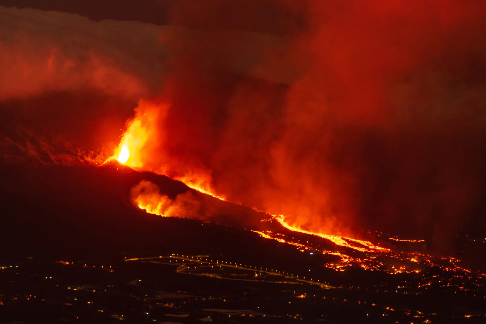
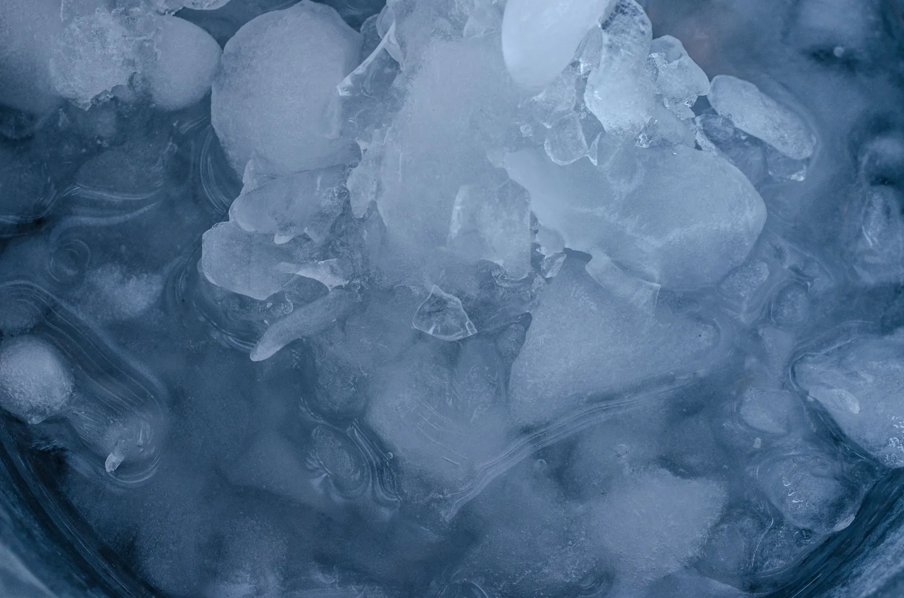

Olomuodon muutokset
Miksi normaalissa ilmanpaineessa kiehuvan veden lämpötila pysyy noin $100\,{}^\circ\text{C}$:ssa, vaikka kattilaan siirtyy koko ajan energiaa?
Pohjatiedot
- Lämpömäärä $Q = cm\Delta T$ ja veden ominaislämpökapasiteetti $4190\,\text{J/(kg}\cdot\text{K)}$luku Aineen lämpeneminen ja jäähtyminen
- Teho kertoo, kuinka nopeasti energiaa siirtyy: $Q = Pt$luku Työ ja energia
Ydinpolku: etene vaiheiden mukaan. Ydinpolkuun kuuluvat laskujen lisäksi tutkimukset, selitykset ja kuvaajat. Valinnainen-merkityt tehtävät tarjoavat lisäharjoittelua. Valinnaisia tehtäviä 6.
Pohdinta
Laitat kattilaan pakastimen jääpaloja, kytket levyn päälle ja työnnät lämpömittarin jäiden sekaan. Levy antaa koko ajan saman tehon. Lämpömittarin lukema alkaa pakkasen puolelta ja nousee – mutta nouseeko se tasaisesti koko ajan, kunnes kattila on tyhjä?
Mihin levyltä tuleva energia menee niinä hetkinä, kun lämpömittarin lukema ei muutu?
Valinnainen Kertaa: lämpömäärä
Ennusta
Tee ennusteet ennen tutkimista 3 kysymystä
Ennuste 1: teho kaksinkertaistuu
Valinnainen Ennuste 2: sulaminen ja kiehuminen
Ennuste 3: miksi lämpötila ei nouse?
Tutki
Simulaatio
Käyttöohje
Paina Lämmitä ja seuraa $(t, T)$-kuvaajaa: missä kohdissa lämpötila nousee ja missä se pysyy paikallaan?
Mallin oletukset
Malli olettaa, että kaikki kuumentimen energia siirtyy aineeseen ja paine pysyy normaalissa ilmanpaineessa $p = 101\,\text{kPa}$. Astiaa sulkee kevyt, vapaasti liikkuva mäntä, eikä höyry poistu astiasta vaan laajenee männän alla; kuva ei ole mittakaavassa, sillä höyryn tilavuus on noin 1700-kertainen veteen verrattuna. Siksi vesi kiehuu $100\,{}^\circ\text{C}$:ssa, ja höyryn lämpenemiseen käytetään vakiopaineen ominaislämpökapasiteettia $2{,}0\,\text{kJ/(kg}\cdot\text{K)}$. Avoimessa kattilassa höyry karkaisi eikä lämpenisi $130\,{}^\circ\text{C}$:seen. Suljetussa jäykässä astiassa paine kasvaisi höyryn muodostuessa, kiehumislämpötila nousisi, eikä käyrässä olisi vaakasuoraa osaa tasan $100\,{}^\circ\text{C}$:ssa. Ruudun arvot ovat mallin laskemia, eivät mittauksia oikeasta astiasta.
Simulaatiossa jäätä lämmitetään $-20\,{}^\circ\text{C}$:sta vakioteholla normaalissa ilmanpaineessa, kunnes se on 130-asteista höyryä.
Koe 1: vain teho muuttuu
Testaa ennuste 1. Massa on lukittu $0{,}50\,\text{kg}$:aan; muuta vain tehoa. Kirjaa sulamisen ja kiehumisen kestot ainakin kahdella teholla, esimerkiksi $1000\,\text{W}$ ja $2000\,\text{W}$. Kestot ovat mallin laskemia ($t = Q/P$) ja näkyvät heti. Paina kummallakin teholla myös Lämmitä ja katso, millä lämpötilalla kuvaajan pitkä vaakasuora osa on.
Alkutila: massa $m$ = $0{,}5\,\text{kg}$, teho $P$ = $1000\,\text{W}$. Vakiona: massa $m$. Muutetaan: teho $P$.
| teho $P$ | sulaa $(\text{s})$ | kiehuu $(\text{s})$ |
|---|
Lisää tutkittavaa 2 tehtävää
Koe 2: vain massa muuttuu
Testaa ennusteet 2 ja 3. Teho on lukittu $1000\,\text{W}$:iin; muuta vain massaa. Kirjaa kestot ainakin kahdella massalla, esimerkiksi $0{,}25\,\text{kg}$ ja $0{,}50\,\text{kg}$, ja vertaa kiehumisen kestoa sulamisen kestoon. Lämmitä kerran ja katso, missä vaiheessa astiassa on yhtä aikaa kahta olomuotoa.
Alkutila: massa $m$ = $0{,}25\,\text{kg}$, teho $P$ = $1000\,\text{W}$. Vakiona: teho $P$. Muutetaan: massa $m$.
| massa $m$ | sulaa $(\text{s})$ | kiehuu $(\text{s})$ |
|---|
Johtopäätös: mihin energia menee tasanteella?
Kirjoita kuvaajan ja taulukoidesi perusteella lyhyt johtopäätös.
Millä lämpötilalla kiehumisen vaakasuora osa oli eri tehoilla? Miten sulamisen ja kiehumisen kestot riippuivat massasta ja tehosta, ja mitä se kertoo olomuodon muutokseen tarvittavasta energiasta? Kenen selitys ennusteessa 3 sopii tähän?
Mallivastaus
Kiehumisen vaakasuora osa oli $100\,{}^\circ\text{C}$:ssa kummallakin teholla; suurempi teho vain lyhensi sitä ($0{,}50\,\text{kg}$: $1130\,\text{s}$ teholla $1000\,\text{W}$ ja $565\,\text{s}$ teholla $2000\,\text{W}$). Kestot kaksinkertaistuivat massan mukana, joten tarvittava energia $Q = Pt$ on suoraan verrannollinen massaan: $Q = sm$ ja $Q = rm$. Kiehuminen kesti noin $6{,}8$ kertaa pidempään kuin sulaminen, koska $r/s \approx 6{,}8$. Tasanteella lämpötila pysyy vakiona, joten hiukkasten keskimääräinen liike-energia ei kasva; siirtyvä energia muuttaa hiukkasten keskinäisiä vuorovaikutuksia ja kasvattaa niiden välistä vuorovaikutusenergiaa (Bean selitys). Höyrystyessä pieni osa energiasta kuluu myös työhön, kun höyry laajenee ja työntää mäntää. Simulaatio laskee kestot taulukkoarvoista $s$ ja $r$, joten se havainnollistaa mallia mutta ei mittaa niitä. Oikeassa kokeessa $r$ määritetään mittaamalla esimerkiksi kiehuvan veden massan pieneneminen vaa'alla.
Arvioi oma vastauksesi
Rastita kohdat, jotka omassa vastauksessasi jo on.
Kertaa asia teoriasta ja harjoittele tehtävillä.
Teoria
Ydinajatus
Aine esiintyy kolmessa olomuodossa: kiinteänä, nesteenä ja kaasuna. Mikromallin mukaan kiinteässä aineessa hiukkaset värähtelevät paikoillaan toistensa sitomina, nesteessä ne liikkuvat toistensa ohi mutta pysyvät yhdessä, ja kaasussa ne liikkuvat vapaasti ja törmäilevät vain harvoin. Olomuodon muutoksessa muuttuvat hiukkasten keskinäiset vuorovaikutukset: sulamisessa kiinteän aineen säännöllinen järjestys purkautuu, ja höyrystymisessä hiukkaset etääntyvät kauas toisistaan. Hiukkaset itse eivät muutu: kun jää sulaa tai vesi kiehuu, vesimolekyylien sisäiset kemialliset sidokset eivät katkea. Vastakkaiset muutokset ovat jähmettyminen ja tiivistyminen. Jää voi myös sublimoitua suoraan höyryksi, kuten pakkasella kuivuvassa pyykissä.

Mihin energia menee?
Sulaminen ja höyrystyminen vaativat energiaa, mutta eivät nosta lämpötilaa. Kun jäätä lämmitetään, sen lämpötila nousee $0\,{}^\circ\text{C}$:seen asti. Sitten lämpötila pysyy vakiona, kunnes kaikki jää on sulanut, vaikka energiaa siirtyy koko ajan. Sulamisen ja höyrystymisen aikana aineeseen siirtyvä energia muuttaa hiukkasten keskinäisiä vuorovaikutuksia ja kasvattaa niiden välistä vuorovaikutusenergiaa. Puhtaan aineen olomuodon muuttuessa vakiopaineessa lämpötila pysyy vakiona, joten hiukkasten keskimääräinen liike-energia ei kasva.

Samasta syystä kiehuva vesi pysyy $100\,{}^\circ\text{C}$:ssa, vaikka liesi on täysillä: siirtyvä energia höyrystää vettä eikä nosta sen lämpötilaa. Höyry vie noin 1700 kertaa enemmän tilaa kuin vesi, joten laajetessaan se työntää ympäröivää ilmaa. Pieni osa höyrystämiseen tarvittavasta energiasta kuluu tähän työhön, ja suurin osa kasvattaa molekyylien välistä vuorovaikutusenergiaa. Mitä suurempi teho, sitä nopeammin vesi kiehuu pois, mutta ei sitä kuumemmaksi. Veden höyrystyessä sitoutunut energia vapautuu takaisin, kun höyry tiivistyy, ja siksi 100-asteinen höyry polttaa pahemmin kuin 100-asteinen vesi.
Sulamiseen ja höyrystymiseen tarvittava lämpömäärä on suoraan verrannollinen massaan. Kertoimet ovat aineelle ominaisia: ominaissulamislämpö $s$ kertoo, kuinka paljon energiaa yhden kilogramman sulattaminen vaatii, ja ominaishöyrystymislämpö $r$, kuinka paljon yhden kilogramman höyrystäminen vaatii. Vedelle $s = 334\,\text{kJ/kg}$ ja $r = 2260\,\text{kJ/kg}$. Höyrystäminen vaatii siis lähes seitsemän kertaa enemmän energiaa kuin sulattaminen ja yli viisi kertaa enemmän kuin veden lämmittäminen $0\,{}^\circ\text{C}$:sta $100\,{}^\circ\text{C}$:seen.
Kiehumispiste riippuu paineesta. Faasikaavio esittää, missä olomuodossa aine on kussakin lämpötilassa ja paineessa: sen käyrät yhdistävät sulamis-, kiehumis- ja sublimoitumispisteet eri paineissa. Vuorella, jossa ilmanpaine on pienempi, vesi kiehuu alle $100\,{}^\circ\text{C}$:n lämpötilassa, ja painekattilassa paine nostaa kiehumispisteen yli $100\,{}^\circ\text{C}$:n, jolloin ruoka kypsyy nopeammin.
Sulamis- ja höyrystymislämpö
Massan $m$ sulattamiseen tai höyrystämiseen tarvittava lämpömäärä on
$$Q = s m \qquad \text{ja} \qquad Q = r m$$
missä $Q$ on lämpömäärä (J), $s$ aineen ominaissulamislämpö (J/kg), $r$ ominaishöyrystymislämpö (J/kg) ja $m$ sulavan tai höyrystyvän aineen massa (kg). Sama lämpömäärä vapautuu, kun aine jähmettyy tai tiivistyy. Vakiopaineessa lämpötila ei muutu olomuodon muutoksen aikana, joten kaavassa ei ole lämpötilan muutosta $\Delta T$.
| Vesi | Arvo |
|---|---|
| $s$ | $334\,\text{kJ/kg}$ |
| $r$ | $2260\,\text{kJ/kg}$ |
| $c$ (jää) | $2100\,\text{J/(kg}\cdot\text{K)}$ |
| $c$ (vesi) | $4190\,\text{J/(kg}\cdot\text{K)}$ |
| $c$ (vesihöyry) | $2000\,\text{J/(kg}\cdot\text{K)}$ |
Taulukossa $c$ on ominaislämpökapasiteetti, joka esiteltiin luvussa Aineen lämpeneminen ja jäähtyminen.
Lämpenemiskäyrä näyttää lämpötilan siirretyn energian funktiona. Nousevilla osilla aine lämpenee ja pätee $Q = cm\Delta T$, vaakasuorilla osilla aine muuttaa olomuotoaan ja pätee $Q = sm$ tai $Q = rm$. Mitä pienempi ominaislämpökapasiteetti, sitä jyrkemmin lämpötila nousee, joten jään ja höyryn osat ovat noin kaksi kertaa jyrkempiä kuin veden osa:
Yleinen virhekäsitys
Moni luulee, että lämmön lisääminen nostaa aina lämpötilaa. Puhtaan aineen olomuodon muutoksessa vakiopaineessa lämpötila pysyy vakiona, vaikka energiaa siirtyy paljon: jään sulattaminen vaatii yhtä paljon energiaa kuin saman veden lämmittäminen $0\,{}^\circ\text{C}$:sta $80\,{}^\circ\text{C}$:seen. Toinen virhe on pitää 0-asteista jäätä ja 0-asteista vettä samanarvoisina jäähdyttäjinä. Jää viilentää juomaa paljon tehokkaammin, koska se ottaa sulaessaan paljon energiaa ennen kuin alkaa lämmetä. Kolmas virhe on ajatella, että vesi kiehuu aina $100\,{}^\circ\text{C}$:ssa: kiehumispiste riippuu paineesta.
Tiivistelmä
- Olomuodot ovat kiinteä, neste ja kaasu. Mikromallissa olomuodon muutos muuttaa hiukkasten keskinäisiä vuorovaikutuksia: sulaessa ja höyrystyessä hiukkasten välinen vuorovaikutusenergia kasvaa, mutta molekyylien sisäiset kemialliset sidokset eivät katkea.
- Kun paine pysyy vakiona, puhtaan aineen lämpötila pysyy vakiona olomuodon muutoksen aikana. Sulattamiseen tarvitaan $Q = sm$ ja höyrystämiseen $Q = rm$; vedelle $s = 334\,\text{kJ/kg}$ ja $r = 2260\,\text{kJ/kg}$.
- Lämpenemiskäyrässä nousevat osat ovat lämpenemistä ($Q = cm\Delta T$) ja vaakasuorat osat olomuodon muutoksia.
- Kiehumispiste riippuu paineesta; faasikaavio kertoo aineen olomuodon lämpötilan ja paineen mukaan.
- Ominaishöyrystymislämpö voidaan mitata kiehuttamalla vettä uppokuumentimella vaa'an päällä: $r = Pt/\Delta m$, missä $\Delta m$ on vaa'an lukeman muutos.
Valinnainen Palaa ennusteisiisi
Vertaa ennusteitasi mittauksiin ja malliin $Q = sm$, $Q = rm$. Palaa sitten alun kysymykseen: mihin levyn energia menee niinä hetkinä, kun lämpömittarin lukema ei muutu, ja miksi kiehuvan veden lämpötila pysyy noin $100\,{}^\circ\text{C}$:ssa, vaikka kattilaan siirtyy koko ajan energiaa?
Muuttaisitko ennustettasi?
Esimerkit
Kun olet opiskellut luvun teorian, siirry ohjattuihin esimerkkeihin. Ensimmäisessä seuraat mallilaskua vaihe vaiheelta, seuraavissa teet valinnat itse, ja vihjeet auttavat, jos jäät jumiin.
Esimerkki 1: Veden höyrystymislämpö
Veden ominaishöyrystymislämpö määritetään kokeellisesti. Avoin kalorimetri, jossa on kiehuvaa vettä, on vaa'an päällä, ja vedessä on $1000\,\text{W}$:n uppokuumennin. Viiden minuutin ($300\,\text{s}$) aikana vaa'an lukema pienenee $128\,\text{g}$ (keksitty esimerkkiluku, ei oikean mittauksen tulos). Mikä on veden ominaishöyrystymislämpö tämän lukeman mukaan?
Vaihe 1/7
Tunnetut ja kysytty. Teho $P = 1000\,\text{W}$, aika $t = 300\,\text{s}$ ja höyrystynyt massa eli vaa'an lukeman muutos $\Delta m = 128\,\text{g}$. Vesi on kiehuvaa eli $100\,{}^\circ\text{C}$:ssa. Kysytään ominaishöyrystymislämpöä $r$. Oletetaan, että kuumentimen energia siirtyy kokonaan veteen.
Vaihe 2/7
Periaate. Vesi kiehuu koko ajan, joten sen lämpötila ei nouse ja kaikki kuumentimen antama energia $Q = Pt$ kuluu höyrystämiseen. Höyrystymiseen tarvittava lämpömäärä on verrannollinen höyrystyneeseen massaan, $Q = r\,\Delta m$. Energia säilyy, joten nämä kaksi ovat yhtä suuret.
Vaihe 3/7
Kaava ratkaistuna. Merkitään lämpömäärät yhtä suuriksi ja ratkaistaan $r$:
$$\begin{aligned} Pt &= r\,\Delta m \\ r &= \frac{Pt}{\Delta m} \end{aligned}$$
Vaihe 4/7
Yksikkömuunnokset. Vaa'an lukeman muutos muunnetaan kilogrammoiksi: $128\,\text{g} = 0{,}128\,\text{kg}$. Teho ja aika ovat jo perusyksiköissä, ja $1\,\text{W} \cdot 1\,\text{s} = 1\,\text{J}$. Lopuksi tulos muunnetaan megajouleiksi: $1\,\text{MJ} = 10^6\,\text{J}$.
Vaihe 5/7
Sijoitus. Sijoitetaan arvot yksiköineen:
$$\begin{aligned} r &= \frac{Pt}{\Delta m} \\ &= \frac{1000\,\text{W} \cdot 300\,\text{s}}{0{,}128\,\text{kg}} \\ &= \frac{300\,000\,\text{J}}{0{,}128\,\text{kg}} \\ &= 2\,343\,750\,\tfrac{\text{J}}{\text{kg}} \end{aligned}$$
Vaihe 6/7
Tulos. Ominaishöyrystymislämpö on $2{,}34\,\tfrac{\text{MJ}}{\text{kg}}$. Tulos ilmoitetaan kolmella merkitsevällä numerolla, koska massan lukema $128\,\text{g}$ on annettu kolmella numerolla ja se rajoittaa tarkkuutta eniten.
Vaihe 7/7
Järkevyys. Tulos $2{,}34\,\tfrac{\text{MJ}}{\text{kg}}$ on hieman taulukkoarvoa $2{,}26\,\tfrac{\text{MJ}}{\text{kg}}$ suurempi, noin $3{,}7\,\%$. Se on odotettu suunta: osa kuumentimen energiasta siirtyy astian kautta ympäröivään ilmaan eikä höyrystä vettä, joten oletus "kaikki energia veteen" antaa liian suuren $r$:n. Taulukkoarvolla höyrystyisi
eli $133\,\text{g}$, vain $5\,\text{g}$ enemmän kuin mitattu, joten tulos on muutaman prosentin tarkkuudella oikea.
Valinnainen Esimerkki 2: Etsi virhe
Valinnainen Esimerkki 3: Sovella uuteen tilanteeseen
Höyrystävä ilmankostutin keittää vettä höyryksi. Sen säiliöstä höyrystyy tunnissa $0{,}30\,\text{kg}$ vettä, joka on jo valmiiksi 100-asteista. Kuinka suuri on kostuttimen höyrystämiseen käyttämä teho? Lämpöhäviöitä ei huomioida. Vastaa watteina.
Vihje 1: ohjaava kysymys
Kuinka suuri lämpömäärä tarvitaan $0{,}30\,\text{kg}$:n vettä höyrystämiseen, ja kuinka pitkässä ajassa se siirretään?
Vihje 2: mikä yhteys
Höyrystämiseen tarvitaan $Q = rm$, ja teho on $P = \dfrac{Q}{t} = \dfrac{rm}{t}$.
Vihje 3: välivaihe
Sijoita:
Muista, että $1\,\text{J/s} = 1\,\text{W}$.
Näytä ratkaisu
Annettu
höyrystyvä vesi $m = 0{,}30\,\text{kg}$ ajassa $t = 1\,\text{h}$, vesi on jo $100\,{}^\circ\text{C}$:ssa, ei lämpöhäviöitä; taulukosta $r = 2260\,\tfrac{\text{kJ}}{\text{kg}}$
Kysytty
höyrystämiseen käytettävä teho $P$ watteina
Periaate
Vesi on jo kiehumispisteessä, joten sitä ei tarvitse lämmittää ja kaikki energia kuluu höyrystämiseen, $Q = rm$. Kun häviöitä ei ole, energia säilyy, ja teho on energia jaettuna ajalla.
Kaava
$P = \dfrac{Q}{t}$ ja $Q = rm$, joten
$$P = \frac{rm}{t}$$
Muunnokset
$t = 1\,\text{h} = 3600\,\text{s}$. Näin tulos tulee yksikössä $\tfrac{\text{J}}{\text{s}} = \text{W}$.
Sijoitus
Vastaus
$1{,}9\cdot10^{2}\,\text{W}$
(laskimen tulos $188\,\text{W}$), kaksi merkitsevää numeroa kuten massassa $0{,}30\,\text{kg}$.
Järkevyys
Arvio: $0{,}7\,\text{MJ}$ tunnissa on noin $700\,000\,\text{J} / 3600\,\text{s} \approx 190\,\text{W}$. Pari sataa wattia on tavallinen kotikäyttöisen höyrykostuttimen teho. Todellinen ottoteho on hieman suurempi, koska osa energiasta siirtyy ympäristöön, ja teho on pienempi kuin keittolevyn $2000\,\text{W}$, koska höyryä syntyy hitaasti.
Kertaa luvun käsitteet
Jos valitset Kertaa myöhemmin, kortti siirtyy kertauspakkaasi.
- Kiinteä aine
- Rakenneosat ovat sidottuja paikoilleen ja värähtelevät tasapainoasemiensa ympärillä.
- Neste
- Rakenneosat ovat lähekkäin mutta voivat liikkua toistensa suhteen.
- Kaasu
- Rakenneosat liikkuvat lähes vapaasti ja täyttävät käytettävissä olevan tilan.
- Jähmettyminen
- Neste muuttuu kiinteäksi ja luovuttaa energiaa ympäristöön.
- Höyrystyminen
- Neste muuttuu kaasuksi ja vastaanottaa energiaa.
- Tiivistyminen
- Kaasu muuttuu nesteeksi ja luovuttaa energiaa ympäristöön.
- Sublimoituminen
- Kiinteä aine muuttuu suoraan kaasuksi ilman nestemäistä vaihetta.
- Härmistyminen
- Kaasu muuttuu suoraan kiinteäksi aineeksi ilman nestemäistä vaihetta.
- Ominaissulamislämpö
- Kertoo yhden kilogramman sulattamiseen tarvittavan energian sulamispisteessä.$$Q = sm$$
- Ominaishöyrystymislämpö
- Kertoo yhden kilogramman höyrystämiseen tarvittavan energian kiehumispisteessä.$$Q = rm$$
- Faasikaavio
- Esittää aineen olomuodon lämpötilan ja paineen funktiona.
- Kolmoispiste
- Lämpötila ja paine, joissa kiinteä, neste ja kaasu voivat esiintyä tasapainossa yhtä aikaa.
- Kriittinen piste
- Tämän lämpötilan yläpuolella kaasua ei voi nesteyttää pelkästään painetta kasvattamalla.
- Kiehuminen
- Höyrystymistä tapahtuu koko nesteessä, kun höyrynpaine saavuttaa ympäristön paineen.
- Haihtuminen
- Nesteen pinnalta tapahtuvaa höyrystymistä, jota voi tapahtua kaikissa lämpötiloissa.
- Kylläinen höyry
- Kaasussa on tietyssä lämpötilassa suurin mahdollinen määrä kyseisen aineen höyryä.
- Suhteellinen kosteus
- Kertoo vesihöyryn määrän suhteessa kyseisen lämpötilan suurimpaan mahdolliseen määrään.
- Kastepiste
- Lämpötila, johon ilma on jäähdytettävä, jotta vesihöyry alkaa tiivistyä.
- Kiehumispiste
- Lämpötila riippuu ympäristön paineesta ja nousee paineen kasvaessa.
Tehtävät
Taso 1 · perusharjoitus 8 tehtävää
Yksi kaava tai yksi päättelyaskel. Ydintehtävät ensin, loput lisäharjoitusta.
- Tehtävä 8-1Ydintehtävä
Mökkireissulla kylmälaukussa on $1{,}20\,\text{kg}$ jääpaloja, joiden lämpötila on $0\,{}^\circ\text{C}$. Matkan aikana jääpalat sulavat kokonaan $0\,{}^\circ\text{C}$:n lämpöiseksi vedeksi. Kuinka suuren lämpömäärän jää ottaa vastaan sulaessaan? Anna vastaus kilojouleina.
Vastaus
$401\,\text{kJ}$
Näytä ratkaisu
Annettu
jää, $m = 1{,}20\,\text{kg}$, lämpötila $0\,{}^\circ\text{C}$; taulukosta $s = 334\,\tfrac{\text{kJ}}{\text{kg}}$
Kysytty
jään sulamiseen tarvittava lämpömäärä $Q$ kilojouleina
Periaate
Jää on jo sulamislämpötilassa $0\,{}^\circ\text{C}$ ja muuttuu $0\,{}^\circ\text{C}$:n lämpöiseksi vedeksi. Lämpötila ei muutu, joten $Q = cm\Delta T$ ei päde, vaan tarvitaan sulamislämpö: lämpömäärä on verrannollinen sulavaan massaan.
Kaava
$Q = sm$, ja kysytty $Q$ on jo yksin vasemmalla puolella: $Q = sm$
Muunnokset
Ei tarvita: massa on kilogrammoina ja $s$ on kilojouleina kilogrammaa kohti, joten tulos tulee suoraan kilojouleina.
Sijoitus
$Q$$= 334\,\tfrac{\text{kJ}}{\text{kg}} \cdot 1{,}20\,\text{kg}$$= 400{,}8\,\text{kJ}$Vastaus
$401\,\text{kJ}$
Kolme merkitsevää numeroa kuten massassa $1{,}20\,\text{kg}$.
Järkevyys
Kilogramman sulattaminen vaatii $334\,\text{kJ}$, joten vähän yli kilogramman sulattaminen vaatii vähän yli $334\,\text{kJ}$: arvio $334\,\text{kJ} \cdot 1{,}2 \approx 400\,\text{kJ}$. $Q$ on positiivinen, koska jää ottaa energiaa vastaan. Sulamisvesi ei lämpene laskussa, koska lämpötila pysyy $0\,{}^\circ\text{C}$:ssa.
- Tehtävä 8-2
Mökillä keitetään perunoita ilman kantta. Keittämisen aikana kattilasta kiehuu pois $0{,}40\,\text{kg}$ vettä. Kuinka suuri lämpömäärä kuluu tämän vesimäärän höyrystämiseen? Anna vastaus megajouleina.
Vastaus
$0{,}90\,\text{MJ}$
Näytä ratkaisu
Annettu
kattilasta kiehuva vesi, $m = 0{,}40\,\text{kg}$; taulukosta $r = 2260\,\tfrac{\text{kJ}}{\text{kg}}$
Kysytty
höyrystämiseen kuluva lämpömäärä $Q$ megajouleina
Periaate
Vesi on jo kiehuvaa ja muuttuu höyryksi vakiolämpötilassa $100\,{}^\circ\text{C}$. Lämpötila ei muutu, joten ei käytetä $c m \Delta T$:ta vaan höyrystymislämpöä: lämpömäärä on verrannollinen höyrystyvään massaan.
Kaava
$Q = rm$, ja $Q$ on jo ratkaistu: $Q = rm$
Muunnokset
Tulos saadaan ensin kilojouleina: $r m = 904\,\text{kJ}$. Lopuksi $1\,\text{MJ} = 1000\,\text{kJ}$, joten $904\,\text{kJ} = 0{,}904\,\text{MJ}$.
Sijoitus
$Q$$= 2260\,\tfrac{\text{kJ}}{\text{kg}} \cdot 0{,}40\,\text{kg}$$= 904\,\text{kJ}$$= 0{,}904\,\text{MJ}$Vastaus
$0{,}90\,\text{MJ}$
Kaksi merkitsevää numeroa kuten massassa $0{,}40\,\text{kg}$.
Järkevyys
Arvio:
$2300\,\tfrac{\text{kJ}}{\text{kg}} \cdot 0{,}4\,\text{kg}$$\approx 920\,\text{kJ}$Höyrystäminen vaatii paljon energiaa: sama $0{,}90\,\text{MJ}$ lämmittäisi vettä
$\dfrac{904\,\text{kJ}}{4{,}19\,\tfrac{\text{kJ}}{\text{kg}\cdot\text{K}} \cdot 80\,\text{K}}$$\approx 2{,}7\,\text{kg}$verran $20\,{}^\circ\text{C}$:sta $100\,{}^\circ\text{C}$:seen. Siksi kannellinen kattila säästää energiaa.
- Tehtävä 8-3
Syksyn ensimmäisellä pakkasviikolla järven pintaan jäätyy $45\,\text{kg}$ vettä jokaista neliömetriä kohti. Vesi on $0\,{}^\circ\text{C}$:n lämpöistä ja muuttuu $0\,{}^\circ\text{C}$:n lämpöiseksi jääksi.
Kuinka suuri lämpömäärä vapautuu jäätymisessä jokaista neliömetriä kohti? Anna vastaus megajouleina.
Vastaus
$15\,\text{MJ}$
Näytä ratkaisu
Annettu
järven pintaan jäätyvä vesi, $m = 45\,\text{kg}$ jokaista neliömetriä kohti, lämpötila $0\,{}^\circ\text{C}$; taulukosta $s = 334\,\tfrac{\text{kJ}}{\text{kg}}$
Kysytty
jäätymisessä vapautuva lämpömäärä $Q$ megajouleina
Periaate
Vesi jähmettyy $0\,{}^\circ\text{C}$:n lämpöiseksi jääksi vakiolämpötilassa. Jähmettyessä vapautuu sama lämpömäärä, jonka sama massa sulaessaan ottaisi vastaan, joten käytetään sulamislämpöä $s$ eikä lämpötilan muutosta.
Kaava
$Q = sm$ (luovutettu lämpömäärä ilmoitetaan positiivisena), ja $Q$ on jo ratkaistu: $Q = sm$
Muunnokset
Tulos tulee kilojouleina: $15\,030\,\text{kJ}$. Lopuksi $1\,\text{MJ} = 1000\,\text{kJ}$, joten $15\,030\,\text{kJ} = 15{,}03\,\text{MJ}$.
Sijoitus
$Q$$= 334\,\tfrac{\text{kJ}}{\text{kg}} \cdot 45\,\text{kg}$$= 15\,030\,\text{kJ}$$= 15{,}03\,\text{MJ}$Vastaus
$15\,\text{MJ}$
Kaksi merkitsevää numeroa kuten massassa $45\,\text{kg}$.
Järkevyys
Arvio:
$330\,\tfrac{\text{kJ}}{\text{kg}} \cdot 45\,\text{kg}$$\approx 15\,000\,\text{kJ}$Vesikerroksen paksuus on
$\dfrac{45\,\text{kg}}{1000\,\tfrac{\text{kg}}{\text{m}^3} \cdot 1\,\text{m}^2}$$= 4{,}5\,\text{cm}$mikä sopii pakkasviikon aikana jäätyneeksi kerrokseksi. Vapautuva lämpö hidastaa jäätymistä, joten järvi ei jäädy hetkessä.
- Tehtävä 8-4
Kahvilan espressokeittimen höyryputkesta puhalletaan $100\,{}^\circ\text{C}$:n lämpöistä vesihöyryä maitokannuun. Maidon vaahdottamisen aikana $0{,}030\,\text{kg}$ höyryä tiivistyy maidossa $100\,{}^\circ\text{C}$:n lämpöiseksi vedeksi. Kuinka suuren lämpömäärän höyry luovuttaa tiivistyessään? Anna vastaus kilojouleina.
Vastaus
$68\,\text{kJ}$
Näytä ratkaisu
Annettu
höyry, joka tiivistyy $100\,{}^\circ\text{C}$:n lämpöiseksi vedeksi, $m = 0{,}030\,\text{kg}$; taulukosta $r = 2260\,\tfrac{\text{kJ}}{\text{kg}}$
Kysytty
höyryn luovuttama lämpömäärä $Q$ kilojouleina
Periaate
Höyry tiivistyy vedeksi samassa $100\,{}^\circ\text{C}$:n lämpötilassa, joten lämpötila ei muutu. Tiivistyessä vapautuu sama lämpömäärä, joka höyrystymiseen tarvittaisiin, joten käytetään höyrystymislämpöä $r$.
Kaava
$Q = rm$ (luovutettu lämpömäärä ilmoitetaan positiivisena), ja $Q$ on jo ratkaistu: $Q = rm$
Muunnokset
Ei tarvita: massa on kilogrammoina ja $r$ kilojouleina kilogrammaa kohti, joten tulos tulee kilojouleina.
Sijoitus
$Q$$= 2260\,\tfrac{\text{kJ}}{\text{kg}} \cdot 0{,}030\,\text{kg}$$= 67{,}8\,\text{kJ}$Vastaus
$68\,\text{kJ}$
Kaksi merkitsevää numeroa kuten massassa $0{,}030\,\text{kg}$.
Järkevyys
Arvio:
$2300\,\tfrac{\text{kJ}}{\text{kg}} \cdot 0{,}03\,\text{kg}$$\approx 69\,\text{kJ}$Tämä lämpömäärä lämmittäisi $0{,}3\,\text{kg}$ maitoa noin
$\dfrac{67{,}8\,\text{kJ}}{4{,}19\,\tfrac{\text{kJ}}{\text{kg}\cdot\text{K}} \cdot 0{,}3\,\text{kg}}$$\approx 54\,\text{K}$joten pieni höyrymäärä lämmittää kannullisen maitoa. Samasta syystä höyry polttaa ihoa pahemmin kuin yhtä kuuma vesi.
- Tehtävä 8-5
Pakastimesta otettua $0{,}60\,\text{kg}$:n jääpalaa lämmitetään. Kuvaajassa on jään lämpötila siirretyn energian funktiona. Määritä kuvaajan avulla jään ominaissulamislämpö. Lue tarvittavat arvot kuvaajasta.
Vastaus
$333\,\tfrac{\text{kJ}}{\text{kg}}$
Näytä ratkaisu
Annettu
jään massa $m = 0{,}60\,\text{kg}$; lämpötila siirretyn energian funktiona kuvaajassa
Kysytty
jään ominaissulamislämpö $s$
Periaate
Kuvaajan vaakasuorassa osassa lämpötila pysyy vakiona $0\,{}^\circ\text{C}$:ssa, vaikka energiaa siirtyy: jää sulaa, ja kaikki siirtyvä energia kuluu sulamiseen, $Q = sm$. Sulamiseen kuluva energia on vaakasuoran osan pituus vaaka-akselilla.
Kuvaajan lukeminen
Vaakasuora osa alkaa ruudukon risteyksestä $(20\,\text{kJ}$; $0\,{}^\circ\text{C})$ ja päättyy risteykseen $(220\,\text{kJ}$; $0\,{}^\circ\text{C})$. Sulamiseen kuluva energia on siis
$Q$$= 220\,\text{kJ} - 20\,\text{kJ}$$= 200\,\text{kJ}$Kaava
$Q = sm$, josta $s = \dfrac{Q}{m}$
Muunnokset
Ei tarvita: energia luetaan kilojouleina, ja vastaus pyydetään yksikössä $\tfrac{\text{kJ}}{\text{kg}}$.
Sijoitus
$s$$= \dfrac{200\,\text{kJ}}{0{,}60\,\text{kg}}$$= 333\,\tfrac{\text{kJ}}{\text{kg}}$Vastaus
$333\,\tfrac{\text{kJ}}{\text{kg}}$
Kolme merkitsevää numeroa. Arvot luetaan tarkasti ruudukosta, joten hyväksytään $323\ldots343\,\tfrac{\text{kJ}}{\text{kg}}$.
Järkevyys
Tulos on lähellä taulukon arvoa $334\,\tfrac{\text{kJ}}{\text{kg}}$. Sulamiseen kuluu $200\,\text{kJ}$, kun jään lämmittämiseen ennen sulamista kului vain $20\,\text{kJ}$, joten vaakasuora osa on pitkä, ja lämpötilan nousu on sulamisen jälkeen loivempaa, koska veden ominaislämpökapasiteetti on suurempi kuin jään.
- Tehtävä 8-6Ydintehtävä
Jäälohkoa lämmitetään tasaisesti sen sulamispisteessä, ja lohko sulaa. Mitä jään ja sulamisveden seoksen lämpötilalle tapahtuu, kun jäätä on vielä jäljellä?
Vastaus
Lämpötila pysyy samana, koska energia muuttaa hiukkasten keskinäisiä vuorovaikutuksia.
Näytä ratkaisu
Kysytty
mitä sulavan jään ja sulamisveden seoksen lämpötilalle tapahtuu, kun jäätä on vielä jäljellä.
Periaate
Vakiopaineessa puhtaan aineen lämpötila pysyy vakiona olomuodon muutoksen ajan. Sulamisen aikana siirtyvä energia muuttaa hiukkasten keskinäisiä vuorovaikutuksia ja kasvattaa niiden välistä vuorovaikutusenergiaa, joten se ei näy lämpötilan nousuna.
Mallivastaus
Lämpötila pysyy samana, koska energia kuluu hiukkasten keskinäisten vuorovaikutusten muuttamiseen eikä hiukkasten liike-energian kasvattamiseen. Vaihtoehto, jonka mukaan lämpötila nousee tasaisesti, unohtaa tämän. Vaihtoehto, jonka mukaan seos jäähtyy, on ristiriidassa sen kanssa, että lämmityksessä energiaa siirtyy seokseen koko ajan. Vaihtoehto, jossa lämpötila ensin nousee ja sitten laskee, ei vastaa mitään sulamisen vaihetta. Vasta kun kaikki jää on sulanut, sulamisvesi alkaa lämmetä.
- Tehtävä 8-7
Kuumana päivänä iholle tulee hikeä, ja hiki haihtuu. Miksi hien haihtuminen viilentää ihoa?
Vastaus
Haihtuva hiki ottaa energiaa iholta, joten iho viilenee.
Näytä ratkaisu
Kysytty
miksi hien haihtuminen viilentää ihoa.
Periaate
Nesteen höyrystyminen vaatii energiaa, $Q = rm$. Haihtuva hiki ottaa tämän energian ympäristöstään, tässä iholta, joten iho menettää energiaa ja sen lämpötila laskee.
Mallivastaus
Haihtuvat vesimolekyylit ottavat energiaa mukaansa iholta, joten iho menettää energiaa ja viilenee. Höyrystyminen sitoo energiaa eikä luovuta sitä, joten väite, että hiki lämmittäisi ihoa, on väärä. Hiki on yhtä lämmintä kuin iho, joten se ei viilennä ihoa lämpötilaeronsa vuoksi. Haihtuminen ei myöskään kuluta ihon happea. Energian määrä on suuri: yhden grammin haihtuminen vaatii $r m = 2260\,\tfrac{\text{kJ}}{\text{kg}} \cdot 0{,}001\,\text{kg} = 2{,}26\,\text{kJ}$.
- Tehtävä 8-8
Mökin hella unohtuu päälle avoimen kattilan alle. Kun vesi kiehuu, veteen siirtyy kiehumisen aikana yhteensä $1{,}36\,\text{MJ}$ energiaa, ja kaikki se kuluu veden höyrystämiseen.
Kuinka monta kilogrammaa vettä kiehuu pois?
Vastaus
$0{,}602\,\text{kg}$
Näytä ratkaisu
Annettu
höyrystymiseen kuluva energia $Q = 1{,}36\,\text{MJ}$; taulukosta $r = 2260\,\tfrac{\text{kJ}}{\text{kg}}$
Kysytty
pois kiehuva vesimäärä $m$ kilogrammoina
Periaate
Vesi kiehuu jo, joten sen lämpötila ei nouse ja koko energia kuluu höyrystämiseen, $Q = rm$. Höyrystyvä massa on verrannollinen energiaan.
Kaava
$Q = rm$, josta $m = \dfrac{Q}{r}$
Muunnokset
$Q$$= 1{,}36\,\text{MJ}$$= 1360\,\text{kJ}$koska $1\,\text{MJ} = 1000\,\text{kJ}$. Silloin $r$ voidaan pitää kilojouleina kilogrammaa kohti.
Sijoitus
$m$$= \dfrac{1360\,\text{kJ}}{2260\,\tfrac{\text{kJ}}{\text{kg}}}$$= 0{,}6018\,\text{kg}$Vastaus
$0{,}602\,\text{kg}$
Kolme merkitsevää numeroa kuten energiassa $1{,}36\,\text{MJ}$.
Järkevyys
Palautuslasku:
$0{,}602\,\text{kg} \cdot 2260\,\tfrac{\text{kJ}}{\text{kg}}$$\approx 1360\,\text{kJ}$Tulos on pienempi kuin $1\,\text{kg}$, koska $1\,\text{kg}$ vaatisi $2260\,\text{kJ}$, joka on enemmän kuin $1360\,\text{kJ}$. Yksiköt: $\tfrac{\text{kJ}}{\text{kJ/kg}} = \text{kg}$.
Taso 2 · soveltava harjoitus 8 tehtävää
Kaksi vaihetta, mittausaineiston käsittely, yksikkömuunnos tai kaavan ratkaiseminen. Ydintehtävät ensin, loput lisäharjoitusta.
- Tehtävä 8-9
Mökin sähköhellan keittolevyn teho on $2{,}0\,\text{kW}$. Levyllä on kattila, jossa vesi kiehuu, ja kattila unohtuu liedelle.
Kuinka kauan kestää, ennen kuin kattilasta on kiehunut pois $0{,}50\,\text{kg}$ vettä? Oleta, että kaikki levyn energia siirtyy veteen. Anna vastaus minuutteina.
Vastaus
$9{,}4\,\text{min}$
Näytä ratkaisu
Annettu
$P = 2{,}0\,\text{kW}$, kiehuvasta vedestä höyrystyvä massa $m = 0{,}50\,\text{kg}$, kaikki levyn energia siirtyy veteen; taulukosta $r = 2260\,\tfrac{\text{kJ}}{\text{kg}}$
Kysytty
aika $t$ minuutteina
Periaate
Vesi kiehuu jo, joten sen lämpötila ei nouse ja kaikki levyn energia $Pt$ kuluu höyrystämiseen, $Q = rm$. Energia säilyy, kun häviöitä ei ole, joten $Pt = rm$.
Kaava
$Pt = rm$, josta $t = \dfrac{rm}{P}$
Muunnokset
$P$$= 2{,}0\,\text{kW}$$= 2000\,\text{W}$$r$$= 2260\,\tfrac{\text{kJ}}{\text{kg}}$$= 2\,260\,000\,\tfrac{\text{J}}{\text{kg}}$Aika saadaan sekunteina ja muunnetaan lopuksi minuuteiksi: $1\,\text{min} = 60\,\text{s}$.
Sijoitus
$t$$= \dfrac{2\,260\,000\,\tfrac{\text{J}}{\text{kg}} \cdot 0{,}50\,\text{kg}}{2000\,\text{W}}$$= 565\,\text{s}$$= \dfrac{565}{60}\,\text{min}$$= 9{,}42\,\text{min}$Vastaus
$9{,}4\,\text{min}$
Kaksi merkitsevää numeroa kuten teholla $2{,}0\,\text{kW}$ ja massalla $0{,}50\,\text{kg}$.
Järkevyys
Arvio: noin $1{,}1\,\text{MJ}$ energiaa teholla $2\,\text{kW}$ vie noin $550\,\text{s}$, eli vajaat $10\,\text{min}$. Puolen kilon kiehuminen pois noin kymmenessä minuutissa vastaa kokemusta. Yksiköt:
$\tfrac{\text{J}}{\text{W}}$$= \tfrac{\text{J}}{\text{J/s}}$$= \text{s}$ - Tehtävä 8-10Ydintehtävä
Pakastimesta otetaan $750\,\text{g}$ jäätä, jonka lämpötila on $-18\,{}^\circ\text{C}$.
Kuinka suuri lämpömäärä tarvitaan, jotta jää lämpenisi $0\,{}^\circ\text{C}$:seen ja sulaisi kokonaan $0\,{}^\circ\text{C}$:n lämpöiseksi vedeksi? Jään ominaislämpökapasiteetti on $2100\,\text{J/(kg}\cdot\text{K)}$. Anna vastaus kilojouleina.
Vastaus
$280\,\text{kJ}$
Näytä ratkaisu
Annettu
jää, $m = 750\,\text{g}$, $T_1 = -18\,{}^\circ\text{C}$, loppu $0\,{}^\circ\text{C}$:n lämpöinen vesi; taulukosta $c_\text{jää} = 2100\,\tfrac{\text{J}}{\text{kg}\cdot\text{K}}$ ja $s = 334\,\tfrac{\text{kJ}}{\text{kg}}$
Kysytty
kokonaislämpömäärä $Q$ kilojouleina
Periaate
Prosessissa on kaksi vaihetta. Ensin jää lämpenee $-18\,{}^\circ\text{C}$:sta sulamislämpötilaan $0\,{}^\circ\text{C}$ ($Q_1 = cm\Delta T$), ja sitten se sulaa vakiolämpötilassa ($Q_2 = sm$). Kokonaislämpömäärä on näiden summa.
Kaava
$Q = Q_1 + Q_2$, ja $Q = c_\text{jää} m \Delta T + sm$, missä $\Delta T = 0\,{}^\circ\text{C} - T_1$
Muunnokset
$m$$= 750\,\text{g}$$= 0{,}750\,\text{kg}$Lämpötilan muutos on sama kelvineinä:
$\Delta T$$= 0\,{}^\circ\text{C} - (-18\,{}^\circ\text{C})$$= 18\,\text{K}$$s = 334\,000\,\tfrac{\text{J}}{\text{kg}}$ ja lopuksi $1\,\text{kJ} = 1000\,\text{J}$.
Sijoitus
$Q_1$$= 2100\,\tfrac{\text{J}}{\text{kg}\cdot\text{K}} \cdot 0{,}750\,\text{kg} \cdot 18\,\text{K}$$= 28\,350\,\text{J}$$Q_2$$= 334\,000\,\tfrac{\text{J}}{\text{kg}} \cdot 0{,}750\,\text{kg}$$= 250\,500\,\text{J}$joten
$Q$$= 28\,350\,\text{J} + 250\,500\,\text{J}$$= 278\,850\,\text{J}$$= 278{,}85\,\text{kJ}$Vastaus
$280\,\text{kJ}$
Kaksi merkitsevää numeroa kuten lämpötilassa $-18\,{}^\circ\text{C}$.
Järkevyys
Arvio: sulaminen $0{,}75 \cdot 334 \approx 250\,\text{kJ}$ ja lämpeneminen alle $30\,\text{kJ}$, yhteensä noin $280\,\text{kJ}$. Sulaminen vie
$\dfrac{250{,}5}{278{,}85}$$\approx 90\,\%$energiasta, vaikka lämpötila nousee vain lämmitysvaiheessa. Jos grammoja ei muuntaisi kilogrammoiksi, tulos olisi tuhat kertaa liian suuri.
- Tehtävä 8-11
Huhtikuussa järven jää on jo lämmennyt $0\,{}^\circ\text{C}$:n lämpöiseksi. Aurinkoisena päivänä jää saa auringosta energiaa $12\,\text{MJ}$ jokaista neliömetriä kohti. Oleta, että kaikki tämä energia kuluu jään sulattamiseen.
Kuinka monta kilogrammaa jäätä sulaa päivän aikana jokaisen neliömetrin alalta?
Vastaus
$36\,\text{kg}$
Näytä ratkaisu
Annettu
auringosta saatu energia $Q = 12\,\text{MJ}$ neliömetriä kohti, jää $0\,{}^\circ\text{C}$:ssa, kaikki energia kuluu sulattamiseen; taulukosta $s = 334\,\tfrac{\text{kJ}}{\text{kg}}$
Kysytty
sulava jään massa $m$ kilogrammoina
Periaate
Jää on jo $0\,{}^\circ\text{C}$:ssa, joten se ei lämpene vaan kaikki energia kuluu sulamiseen. Siksi sulamiseen tarvittava lämpömäärä on $Q = sm$ ja sulavan massan saa ratkaisemalla $m$.
Kaava
$Q = sm$, josta $m = \dfrac{Q}{s}$
Muunnokset
Megajoulet ja kilojoulet on saatava samaan yksikköön ennen jakamista: $12\,\text{MJ} = 12\,000\,000\,\text{J}$ ja $334\,\tfrac{\text{kJ}}{\text{kg}} = 334\,000\,\tfrac{\text{J}}{\text{kg}}$.
Sijoitus
$m$$= \dfrac{12\,000\,000\,\text{J}}{334\,000\,\tfrac{\text{J}}{\text{kg}}}$$= 35{,}93\,\text{kg}$Vastaus
$36\,\text{kg}$
Kaksi merkitsevää numeroa kuten energiassa $12\,\text{MJ}$.
Järkevyys
Arvio: $\dfrac{12\,000}{330} \approx 36$. Kerroksen paksuus on
$\dfrac{35{,}93\,\text{kg}}{920\,\tfrac{\text{kg}}{\text{m}^3} \cdot 1\,\text{m}^2}$$\approx 3{,}9\,\text{cm}$joten aurinkoinen päivä ohentaa jäätä muutaman sentin, mikä sopii kevään havaintoihin. Jos käyttäisi $\text{MJ}$ ja $\text{kJ}$ sekaisin, tulos olisi tuhat kertaa väärin.
- Tehtävä 8-12
Pastan keittämistä varten kattilaan laitetaan $2{,}0\,\text{kg}$ vettä, jonka lämpötila on $15\,{}^\circ\text{C}$. Vesi lämmitetään kiehumispisteeseen eli $100\,{}^\circ\text{C}$:seen, ja sitä keitetään, kunnes kattilasta on höyrystynyt $0{,}10\,\text{kg}$ vettä.
Kuinka suuri lämpömäärä veteen siirtyy kaikkiaan? Anna vastaus megajouleina.
Vastaus
$0{,}94\,\text{MJ}$
Näytä ratkaisu
Annettu
vesi $m = 2{,}0\,\text{kg}$, $T_1 = 15\,{}^\circ\text{C}$, $T_2 = 100\,{}^\circ\text{C}$, höyrystyvä osa $m_\text{h} = 0{,}10\,\text{kg}$; taulukosta $c = 4190\,\tfrac{\text{J}}{\text{kg}\cdot\text{K}}$ ja $r = 2260\,\tfrac{\text{kJ}}{\text{kg}}$
Kysytty
veteen siirtyvä kokonaislämpömäärä $Q$ megajouleina
Periaate
Prosessissa on kaksi vaihetta. Ensin koko vesimäärä lämpenee kiehumispisteeseen ($Q_1 = cm\Delta T$), ja sitten vain höyrystyvä osa muuttuu höyryksi vakiolämpötilassa ($Q_2 = rm_\text{h}$). Kokonaislämpömäärä on näiden summa.
Kaava
$Q = Q_1 + Q_2$, ja $Q = cm(T_2 - T_1) + rm_\text{h}$
Muunnokset
Lämpötilan muutos on sama kelvineinä:
$T_2 - T_1$$= 100\,{}^\circ\text{C} - 15\,{}^\circ\text{C}$$= 85\,\text{K}$$r = 2\,260\,000\,\tfrac{\text{J}}{\text{kg}}$ ja lopuksi $1\,\text{MJ} = 10^6\,\text{J}$.
Sijoitus
$Q_1$$= 4190\,\tfrac{\text{J}}{\text{kg}\cdot\text{K}} \cdot 2{,}0\,\text{kg} \cdot 85\,\text{K}$$= 712\,300\,\text{J}$$Q_2$$= 2\,260\,000\,\tfrac{\text{J}}{\text{kg}} \cdot 0{,}10\,\text{kg}$$= 226\,000\,\text{J}$joten
$Q$$= 938\,300\,\text{J}$$= 0{,}9383\,\text{MJ}$Vastaus
$0{,}94\,\text{MJ}$
Kaksi merkitsevää numeroa kuten massoissa $2{,}0\,\text{kg}$ ja $0{,}10\,\text{kg}$.
Järkevyys
Arvio:
$4\,\tfrac{\text{kJ}}{\text{kg}\cdot\text{K}} \cdot 2\,\text{kg} \cdot 85\,\text{K}$$\approx 680\,\text{kJ}$$2300 \cdot 0{,}1 = 230\,\text{kJ}$, yhteensä noin $0{,}9\,\text{MJ}$. Höyrystyvä massa on vain $0{,}10\,\text{kg}$, ei koko $2{,}0\,\text{kg}$. Silti tuo pieni määrä vie $\dfrac{226}{938{,}3} \approx 24\,\%$ energiasta, koska $r$ on suuri.
- Tehtävä 8-13Ydintehtävä
Oppilas lämmittää $0{,}250\,\text{kg}$ jäätä $600\,\text{W}$:n uppokuumentimella ja mittaa lämpötilan $T$ ajan $t$ funktiona (taulukko, esimerkkiaineisto). Oleta, että kaikki kuumentimen energia siirtyy jäähän ja siitä syntyvään veteen.
a) Selitä taulukon avulla, mitä aineelle tapahtuu eri vaiheissa ja miksi lämpötila ei nouse noin hetkien $20\,\text{s}$ ja $150\,\text{s}$ välillä.
b) Määritä sulamiseen kuluva aika taulukosta ja laske sen avulla jään ominaissulamislämpö. Taulukon rivit $20\,\text{s}$ ja $150\,\text{s}$ ovat jo tasanteen sisällä: arvioi nousujen kulmakertoimista, milloin lämpötila tarkalleen saavuttaa $0\,{}^\circ\text{C}$ ja milloin se alkaa taas nousta.
Kirjoita vastauslaatikkoon kohdan b) ominaissulamislämpö yksikössä $\text{kJ/kg}$.
Jään lämmitys $600\,\text{W}$:n teholla (esimerkkiaineisto) $t\,(\text{s})$ $T\,({}^\circ\text{C})$ 0 −20,0 10 −8,6 20 0,0 60 0,0 100 0,1 140 0,0 150 0,0 160 1,9 180 13,4 Vastaus
$334\,\tfrac{\text{kJ}}{\text{kg}}$
Näytä ratkaisu
Annettu
jään massa $m = 0{,}250\,\text{kg}$, teho $P = 600\,\text{W}$, kaikki energia siirtyy jäähän; taulukosta lämpötila ajan funktiona
Kysytty
a) vaiheet ja lämpötilan pysyminen; b) ominaissulamislämpö $s$ yksikössä $\tfrac{\text{kJ}}{\text{kg}}$
Periaate
Teho on vakio, joten kuumentimen antama energia on $Pt$. Kun lämpötila nousee, energia kuluu lämpenemiseen, $Q = cm\Delta T$. Kun lämpötila pysyy vakiona $0\,{}^\circ\text{C}$:ssa, jää sulaa, ja koko energia kuluu sulamiseen, $Pt = sm$.
Mallivastaus a)
Ensin jää lämpenee $0\,{}^\circ\text{C}$:seen. Sitten lämpötila pysyy $0\,{}^\circ\text{C}$:ssa, vaikka kuumennin antaa energiaa: energia kuluu jään sulattamiseen ja kasvattaa hiukkasten välistä vuorovaikutusenergiaa. Lopuksi kaikki jää on sulanut ja vesi lämpenee.
Taulukon lukeminen
Rivit $20\,\text{s}$ ja $150\,\text{s}$ ovat jo tasanteen sisällä, joten sulamisen alku ja loppu arvioidaan nousuista. Alku: rivit $0\,\text{s}$ ja $10\,\text{s}$ antavat nousun $1{,}14\,\tfrac{\text{K}}{\text{s}}$, joten $0\,{}^\circ\text{C}$ saavutetaan noin $18\,\text{s}$:ssa. Loppu: rivillä $160\,\text{s}$ lämpötila on $1{,}9\,{}^\circ\text{C}$ ja rivien $160\,\text{s}$ ja $180\,\text{s}$ nousu on $0{,}575\,\tfrac{\text{K}}{\text{s}}$, joten nousu alkoi noin $3{,}3\,\text{s}$ aiemmin eli noin $157\,\text{s}$:ssa. Sulamisen kesto on $\Delta t = 157\,\text{s} - 18\,\text{s} = 139\,\text{s}$.
Kaava
$Pt = sm$, josta $s = \dfrac{P\,\Delta t}{m}$
Muunnokset
Teho ja aika ovat jo perusyksiköissä, $1\,\text{W} \cdot 1\,\text{s} = 1\,\text{J}$. Lopuksi $1\,\text{kJ} = 1000\,\text{J}$.
Sijoitus
$$\begin{aligned} s &= \dfrac{600\,\text{W} \cdot 139\,\text{s}}{0{,}250\,\text{kg}} \\ &= \dfrac{83\,400\,\text{J}}{0{,}250\,\text{kg}} \\ &= 333\,600\,\tfrac{\text{J}}{\text{kg}} \end{aligned}$$
Vastaus
$334\,\tfrac{\text{kJ}}{\text{kg}}$
Aika luetaan vain noin sekunnin tarkkuudella, joten hyväksytään $\pm 5\,\%$, ja kolme merkitsevää numeroa annetaan massan ja tehon mukaan. Jos tasanteeksi lukee suoraan rivit $20\,\text{s}$ ja $150\,\text{s}$, aika on $130\,\text{s}$ ja tulos $312\,\tfrac{\text{kJ}}{\text{kg}}$, liian pieni, koska sulaminen alkoi jo ennen riviä $20\,\text{s}$ ja päättyi vasta rivin $150\,\text{s}$ jälkeen.
Järkevyys
Tulos vastaa jään tunnettua ominaissulamislämpöä $334\,\tfrac{\text{kJ}}{\text{kg}}$. Jään lämmitys $-20\,{}^\circ\text{C}$:sta vei noin $18\,\text{s}$ eli $600\,\text{W} \cdot 18\,\text{s} = 10\,800\,\text{J}$. Tarkistus:
$c m \Delta T$$= 2100\,\tfrac{\text{J}}{\text{kg}\cdot\text{K}} \cdot 0{,}250\,\text{kg} \cdot 20\,\text{K}$$= 10\,500\,\text{J}$joten mittaus ja laskenta sopivat yhteen. Sulaminen vei noin $83\,\text{kJ}$, noin kahdeksan kertaa enemmän energiaa kuin jään lämmittäminen.
- Tehtävä 8-14
Oppilas keittää vettä avoimessa kattilassa sähköhellalla. Vesi kiehuu, ja hän kirjoittaa muistiin: ”Kun nostan hellan tehoa, kiehuva vesi lämpenee yli $100\,{}^\circ\text{C}$:n, koska veteen siirtyy enemmän energiaa, ja siksi se höyrystyy nopeammin.”
a) Selitä, mikä oppilaan päättelyssä on virheellistä.
b) Hellan teho on $3{,}0\,\text{kW}$. Kuinka monta kilogrammaa vettä kiehuu pois $5{,}0\,\text{min}$:ssa, kun kaikki hellan energia siirtyy veteen?
Kirjoita vastauslaatikkoon kohdan b) tulos.
Vastaus
$0{,}40\,\text{kg}$
Näytä ratkaisu
Annettu
teho $P = 3{,}0\,\text{kW}$, aika $t = 5{,}0\,\text{min}$, kaikki hellan energia siirtyy veteen; taulukosta $r = 2260\,\tfrac{\text{kJ}}{\text{kg}}$
Kysytty
a) virhe oppilaan päättelyssä; b) pois kiehuvan veden massa $m$ kilogrammoina
Periaate
Avoimessa kattilassa paine on vakio ilmanpaine, ja kiehuvan veden lämpötila pysyy kiehumispisteessä, normaalipaineessa noin $100\,{}^\circ\text{C}$:ssa. Koko hellan antama energia $Pt$ kuluu höyrystämiseen, $Q = rm$, joten $Pt = rm$.
Mallivastaus a)
Oppilas olettaa, että lisätty energia nostaa kiehuvan veden lämpötilaa. Vakiopaineessa lämpötila ei nouse olomuodon muutoksen aikana: lisäenergia kuluu veden höyrystämiseen. Teho vaikuttaa siihen, kuinka nopeasti vesi höyrystyy, mutta ei veden lämpötilaan. Kaksinkertainen teho höyrystää vettä kaksi kertaa niin monta kilogrammaa samassa ajassa, ja vesi pysyy koko ajan $100\,{}^\circ\text{C}$:ssa.
Kaava
$Pt = rm$, josta $m = \dfrac{Pt}{r}$
Muunnokset
$P$$= 3{,}0\,\text{kW}$$= 3000\,\text{W}$$t$$= 5{,}0\,\text{min}$$= 5{,}0 \cdot 60\,\text{s}$$= 300\,\text{s}$$r$$= 2260\,\tfrac{\text{kJ}}{\text{kg}}$$= 2\,260\,000\,\tfrac{\text{J}}{\text{kg}}$Sijoitus
$$\begin{aligned} m &= \dfrac{3000\,\text{W} \cdot 300\,\text{s}}{2\,260\,000\,\tfrac{\text{J}}{\text{kg}}} \\ &= \dfrac{900\,000\,\text{J}}{2\,260\,000\,\tfrac{\text{J}}{\text{kg}}} \\ &= 0{,}398\,\text{kg} \end{aligned}$$
Vastaus
$0{,}40\,\text{kg}$
Kaksi merkitsevää numeroa kuten teholla $3{,}0\,\text{kW}$ ja ajalla $5{,}0\,\text{min}$.
Järkevyys
Arvio: $900\,\text{kJ}$ jaettuna noin $2300\,\tfrac{\text{kJ}}{\text{kg}}$:lla on noin $0{,}39\,\text{kg}$. Teholla $1{,}5\,\text{kW}$ vettä höyrystyisi samassa ajassa puolet tästä, noin $0{,}2\,\text{kg}$, mikä vastaa sitä, että höyrystyvä massa on suoraan verrannollinen tehoon.
- Tehtävä 8-15
Taulukossa on veden kiehumispiste $T_\text{k}$ eri paineissa $p$ (vesihöyrytaulukko, arvot pyöristetty). Kattilassa keitetään vettä avoimena korkealla vuoristossa, jossa ilmanpaine on $60{,}0\,\text{kPa}$. Normaali ilmanpaine on $101{,}3\,\text{kPa}$.
a) Arvioi kiehumispiste paineessa $60{,}0\,\text{kPa}$ taulukon kahden viereisen rivin avulla. Kuinka monta kelviniä alempana vesi kiehuu paineessa $60{,}0\,\text{kPa}$ kuin normaalipaineessa?
b) Selitä, miksi ruoka kypsyy vuoristossa hitaammin, vaikka vesi kiehuu koko ajan ja hella antaa saman tehon.
Kirjoita vastauslaatikkoon kohdan a) tulos.
Veden kiehumispiste eri paineissa (vesihöyrytaulukko) $p\,(\text{kPa})$ $T_\text{k}\,({}^\circ\text{C})$ 20,0 60,1 30,0 69,1 50,0 81,3 70,0 90,0 101,3 100,0 Vastaus
$14{,}4\,\text{K}$
Näytä ratkaisu
Annettu
kiehumispisteet taulukosta: $T_\text{k} = 100{,}0\,{}^\circ\text{C}$ paineessa $101{,}3\,\text{kPa}$, $T_\text{k} = 81{,}3\,{}^\circ\text{C}$ paineessa $50{,}0\,\text{kPa}$ ja $T_\text{k} = 90{,}0\,{}^\circ\text{C}$ paineessa $70{,}0\,\text{kPa}$; vuoristossa $p = 60{,}0\,\text{kPa}$
Kysytty
a) kiehumispisteen ero $\Delta T$ kelvineinä paineessa $60{,}0\,\text{kPa}$ normaalipaineeseen verrattuna; b) miksi ruoka kypsyy hitaammin vuoristossa
Periaate
Veden kiehumispiste riippuu paineesta: pienemmässä paineessa vesi kiehuu alemmassa lämpötilassa. Paine $60{,}0\,\text{kPa}$ on taulukon rivien $50{,}0\,\text{kPa}$ ja $70{,}0\,\text{kPa}$ puolivälissä, joten kiehumispiste arvioidaan niiden puolivälistä (lineaarinen interpolointi).
Kaava
$T_\text{k,vuori}$$= \dfrac{T_{50} + T_{70}}{2}$$\Delta T = T_\text{k,normaali} - T_\text{k,vuori}$
Muunnokset
Ei tarvita: lämpötilaero on sama celsiusasteina ja kelvineinä.
Sijoitus
$$\begin{aligned} T_\text{k,vuori} &= \dfrac{81{,}3\,{}^\circ\text{C} + 90{,}0\,{}^\circ\text{C}}{2} \\ &= 85{,}65\,{}^\circ\text{C} \end{aligned}$$
$$\begin{aligned} \Delta T &= 100{,}0\,{}^\circ\text{C} - 85{,}65\,{}^\circ\text{C} \\ &= 14{,}35\,\text{K} \end{aligned}$$
Vastaus
$14{,}4\,\text{K}$
Kolme merkitsevää numeroa kuten taulukon lämpötiloissa. Interpolointi on arvio, joten hyväksytään $\pm 4\,\%$.
Mallivastaus b)
Kiehuva vesi pysyy lämpötilassa $T_\text{k}$, vaikka hella antaa lisää energiaa: lisäenergia höyrystää vettä eikä nosta lämpötilaa. Vuoristossa $T_\text{k}$ on vain noin $85{,}7\,{}^\circ\text{C}$, joten ruoka ympäröivässä vedessä on noin $14\,\text{K}$ viileämpää kuin merenpinnan tasolla. Ruoan kypsyminen riippuu lämpötilasta, joten se kestää kauemmin.
Järkevyys
Arvio $85{,}7\,{}^\circ\text{C}$ on rivien $81{,}3\,{}^\circ\text{C}$ ja $90{,}0\,{}^\circ\text{C}$ välissä, kuten paine $60{,}0\,\text{kPa}$ on rivien $50{,}0\,\text{kPa}$ ja $70{,}0\,\text{kPa}$ välissä. Ero $14{,}4\,\text{K}$ on pienempi kuin paineessa $50{,}0\,\text{kPa}$ ($18{,}7\,\text{K}$) ja suurempi kuin paineessa $70{,}0\,\text{kPa}$ ($10{,}0\,\text{K}$), kuten pitääkin.
- Tehtävä 8-16
Esimerkkiaineisto: neljää vesierää lämmitetään tai niiden olomuoto muuttuu. Veden ominaissulamislämpö on $s = 334\,\tfrac{\text{kJ}}{\text{kg}}$, ominaishöyrystymislämpö $r = 2260\,\tfrac{\text{kJ}}{\text{kg}}$ ja ominaislämpökapasiteetti $c = 4190\,\tfrac{\text{J}}{\text{kg}\cdot\text{K}}$.
Kattila: $0{,}60\,\text{kg}$ vettä lämpenee lämpötilasta $20\,{}^\circ\text{C}$ lämpötilaan $100\,{}^\circ\text{C}$.
Kiehuva vesi: $0{,}10\,\text{kg}$ vettä höyrystyy lämpötilassa $100\,{}^\circ\text{C}$.
Teekannu: $1{,}0\,\text{kg}$ vettä lämpenee lämpötilasta $20\,{}^\circ\text{C}$ lämpötilaan $40\,{}^\circ\text{C}$.
Jääpussi: $0{,}50\,\text{kg}$ jäätä sulaa vedeksi lämpötilassa $0\,{}^\circ\text{C}$.
Laske kuhunkin erään tarvittava lämpömäärä $Q$ ja järjestä erät.
Vastaus
Teekannu (noin $84\,\text{kJ}$), jääpussi ($167\,\text{kJ}$), kattila (noin $201\,\text{kJ}$), kiehuva vesi ($226\,\text{kJ}$).
Näytä ratkaisu
Kysytty
erien järjestys tarvittavan lämpömäärän $Q$ mukaan pienimmästä suurimpaan
Periaate
Lämpenemiseen tarvitaan $Q = cm\Delta T$, sulamiseen $Q = sm$ ja höyrystymiseen $Q = rm$. Olomuodon muutoksessa lämpötila ei muutu, mutta energiaa kuluu silti paljon. Järjestys ei ole sama kuin massan järjestys eikä sen mukaan, onko olomuoto muuttunut, koska tulokseen vaikuttavat massa, lämpötilan muutos sekä ominaislämpökapasiteetti $c$, ominaissulamislämpö $s$ tai ominaishöyrystymislämpö $r$.
Mallivastaus
Lasketaan jokaisen erän lämpömäärä:
Teekannu: $Q = 4190\,\tfrac{\text{J}}{\text{kg}\cdot\text{K}} \cdot 1{,}0\,\text{kg} \cdot 20\,\text{K}$,
eli $Q = 83\,800\,\text{J} \approx 84\,\text{kJ}$
Jääpussi: $Q = 334\,\tfrac{\text{kJ}}{\text{kg}} \cdot 0{,}50\,\text{kg} = 167\,\text{kJ}$
Kattila: $Q = 4190\,\tfrac{\text{J}}{\text{kg}\cdot\text{K}} \cdot 0{,}60\,\text{kg} \cdot 80\,\text{K}$,
eli $Q = 201\,120\,\text{J} \approx 201\,\text{kJ}$
Kiehuva vesi: $Q = 2260\,\tfrac{\text{kJ}}{\text{kg}} \cdot 0{,}10\,\text{kg} = 226\,\text{kJ}$
Pienimmästä suurimpaan: teekannu, jääpussi, kattila, kiehuva vesi. Massan mukaan pienimmästä suurimpaan järjestys olisi kiehuva vesi $0{,}10\,\text{kg}$, jääpussi $0{,}50\,\text{kg}$, kattila $0{,}60\,\text{kg}$ ja teekannu $1{,}0\,\text{kg}$. Lämmön järjestys on lähes päinvastainen, joten massa ei ratkaise. Jään sulaminen vaatii vähemmän kuin kattilallisen lämmittäminen kiehumispisteeseen, joten olomuodon muutos ei aina ole suurin menoerä. Arvio: höyrystämiseen tarvitaan pienelläkin massalla paljon, koska $r$ on suuri, ja siksi vain $0{,}10\,\text{kg}$ riittää ohittamaan kaikki muut erät.
Taso 3 · haastava 5 tehtävää
Valinnaisia: soveltamista, kaksi ideaa yhdessä tai uusi tilanne, jossa päättelet itse.
- Tehtävä 8-17
Laiturilla juodaan mehua.
Lasissa on $0{,}35\,\text{kg}$ mehua, jonka lämpötila on $25\,{}^\circ\text{C}$, ja siihen pudotetaan $60\,\text{g}$ sulamassa olevia $0\,{}^\circ\text{C}$:n lämpöisiä jääpaloja. Mehun ominaislämpökapasiteetti on sama kuin veden.
Mikä on juoman lämpötila, kun kaikki jää on sulanut ja lasin sisältö on lämpötasapainossa? Oleta, että lämpöä ei siirry lasiin eikä ilmaan. Perustele myös, miksi $60\,\text{g}$ $0\,{}^\circ\text{C}$:n lämpöistä vettä ei jäähdyttäisi mehua yhtä paljon.
Vastaus
$9{,}7\,{}^\circ\text{C}$
Näytä ratkaisu
Annettu
mehu (veden $c$) $m_1 = 0{,}35\,\text{kg}$, $T_1 = 25\,{}^\circ\text{C}$; jää $m_2 = 60\,\text{g}$, $T_0 = 0\,{}^\circ\text{C}$; ei lämpöhäviöitä; taulukosta $c = 4190\,\tfrac{\text{J}}{\text{kg}\cdot\text{K}}$ ja $s = 334\,\tfrac{\text{kJ}}{\text{kg}}$
Kysytty
loppulämpötila $T$, kun kaikki jää on sulanut
Periaate
Energia säilyy, kun lämpöä ei siirry lasiin eikä ilmaan: mehun luovuttama lämpömäärä on yhtä suuri kuin jään sulamiseen ja sulamisveden lämmittämiseen kuluva. Jää sulaa kokonaan, jos mehu riittää: se luovuttaisi jäähtyessään $0\,{}^\circ\text{C}$:seen $36\,662{,}5\,\text{J}$, mutta sulaminen vaatii vain $20\,040\,\text{J}$.
Kaava
$cm_1(T_1 - T) = sm_2 + cm_2(T - T_0)$, josta
$T$$= \dfrac{cm_1T_1 + cm_2T_0 - sm_2}{c(m_1 + m_2)}$Muunnokset
$m_2$$= 60\,\text{g}$$= 0{,}060\,\text{kg}$$s = 334\,000\,\tfrac{\text{J}}{\text{kg}}$. Koska $T_0 = 0\,{}^\circ\text{C}$, termi $cm_2T_0$ on nolla, ja lämpötilat voi sijoittaa celsiusasteina, koska kaava sisältää lämpötilaeroja.
Sijoitus
Osoittaja on
$4190 \cdot 0{,}35 \cdot 25 - 334\,000 \cdot 0{,}060$$= 36\,662{,}5 - 20\,040$$= 16\,622{,}5$ja nimittäjä $4190 \cdot 0{,}41 = 1717{,}9$, joten
$$T = \dfrac{16\,622{,}5}{1717{,}9}\,{}^\circ\text{C} = 9{,}68\,{}^\circ\text{C}$$
Vastaus
$9{,}7\,{}^\circ\text{C}$
Kaksi merkitsevää numeroa kuten massassa $0{,}35\,\text{kg}$.
Järkevyys
Tulos on välillä $0\,{}^\circ\text{C}$ ja $25\,{}^\circ\text{C}$. Jos $60\,\text{g}$ olisi jo $0\,{}^\circ\text{C}$:n lämpöistä vettä, loppulämpötila olisi
$\dfrac{0{,}35 \cdot 25}{0{,}41}\,{}^\circ\text{C}$$\approx 21\,{}^\circ\text{C}$Jää jäähdyttää paljon enemmän, koska sulaminen sitoo $20\,040\,\text{J}$ lämpöä ilman lämpötilan muutosta: tämän takia juoma jäähtyy yli $11\,\text{K}$ lisää.
- Tehtävä 8-18
Saunassa heitetään kiukaalle löylyä, kauhallinen eli $0{,}25\,\text{kg}$ vettä, jonka lämpötila on $20\,{}^\circ\text{C}$. Vesi lämpenee kuumilla kivillä $100\,{}^\circ\text{C}$:seen ja höyrystyy kokonaan.
Kiukaassa on $30\,\text{kg}$ kiviä, joiden ominaislämpökapasiteetti on $800\,\text{J/(kg}\cdot\text{K)}$. Oleta, että kaikki veden tarvitsema energia tulee kivistä eikä kiuas lämmitä niitä sillä välin.
Kuinka monta kelviniä kivien lämpötila laskee? Perustele, kumpi vaihe, veden lämpeneminen vai höyrystyminen, vie enemmän energiaa.
Vastaus
$27\,\text{K}$
Näytä ratkaisu
Annettu
vesi $m = 0{,}25\,\text{kg}$, $T_1 = 20\,{}^\circ\text{C}$, lämpenee $T_2 = 100\,{}^\circ\text{C}$:seen ja höyrystyy kokonaan; kivet $m_\text{k} = 30\,\text{kg}$, $c_\text{k} = 800\,\tfrac{\text{J}}{\text{kg}\cdot\text{K}}$; taulukosta $c = 4190\,\tfrac{\text{J}}{\text{kg}\cdot\text{K}}$ ja $r = 2260\,\tfrac{\text{kJ}}{\text{kg}}$
Kysytty
kivien lämpötilan lasku $\Delta T$ kelvineinä
Periaate
Energia säilyy: kaikki veden tarvitsema energia tulee kivistä. Vesi tarvitsee ensin lämpenemiseen $cm(T_2 - T_1)$ ja sitten höyrystymiseen, jossa lämpötila ei muutu, $rm$. Kivien luovuttama lämpömäärä on $c_\text{k}m_\text{k}\Delta T$.
Kaava
$c_\text{k}m_\text{k}\Delta T = cm(T_2 - T_1) + rm$, josta
$\Delta T$$= \dfrac{cm(T_2 - T_1) + rm}{c_\text{k}m_\text{k}}$Muunnokset
$T_2 - T_1$$= 100\,{}^\circ\text{C} - 20\,{}^\circ\text{C}$$= 80\,\text{K}$sama kelvineinä. $r = 2\,260\,000\,\tfrac{\text{J}}{\text{kg}}$.
Sijoitus
$Q_1$$= 4190\,\tfrac{\text{J}}{\text{kg}\cdot\text{K}} \cdot 0{,}25\,\text{kg} \cdot 80\,\text{K}$$= 83\,800\,\text{J}$$Q_2$$= 2\,260\,000\,\tfrac{\text{J}}{\text{kg}} \cdot 0{,}25\,\text{kg}$$= 565\,000\,\text{J}$joten
$\Delta T$$= \dfrac{648\,800\,\text{J}}{800\,\tfrac{\text{J}}{\text{kg}\cdot\text{K}} \cdot 30\,\text{kg}}$$= \dfrac{648\,800\,\text{J}}{24\,000\,\tfrac{\text{J}}{\text{K}}}$$= 27{,}03\,\text{K}$Vastaus
$27\,\text{K}$
Kaksi merkitsevää numeroa kuten massassa $0{,}25\,\text{kg}$.
Järkevyys
Höyrystyminen vie $\dfrac{565}{648{,}8} \approx 87\,\%$ energiasta ja lämpeneminen vain $13\,\%$, vaikka lämpötila nousee $80\,\text{K}$: yhden kilogramman höyrystäminen vaatii saman energian kuin sen lämmittäminen noin
$\dfrac{2260}{4{,}19}$$\approx 540\,\text{K}$Kivien lämpökapasiteetti on $24\,000\,\tfrac{\text{J}}{\text{K}}$, joten yksi kauhallinen jäähdyttää kiviä muutaman kymmenen kelviniä, mikä sopii löylyn kokemukseen.
- Tehtävä 8-19
Ryhmä mittaa veden ominaishöyrystymislämpöä kahdella mittauksella. Vaa'an päällä olevassa avoimessa astiassa vesi kiehuu, ja vedessä on uppokuumennin, jonka tehoa voi säätää.
Kun kuumentimen teho on $800\,\text{W}$, vaa'an lukema pienenee $10{,}0\,\text{min}$:ssa $196\,\text{g}$. Kun teho on $400\,\text{W}$, lukema pienenee $10{,}0\,\text{min}$:ssa $90{,}0\,\text{g}$. Vesi on kummassakin mittauksessa $100\,{}^\circ\text{C}$:n lämpöistä, joten astiasta siirtyy ympäröivään ilmaan joka sekunti yhtä paljon energiaa.
Laske ominaishöyrystymislämpö kahden mittauksen erotuksen avulla. Perustele, miksi ilmaan siirtyvä energia ei vaikuta tulokseen ja miksi kummastakin mittauksesta erikseen laskettu arvo on liian suuri. Anna vastaus yksikössä MJ/kg.
Vastaus
$2{,}26\,\tfrac{\text{MJ}}{\text{kg}}$
Näytä ratkaisu
Annettu
$P_1 = 800\,\text{W}$, $\Delta m_1 = 196\,\text{g}$; $P_2 = 400\,\text{W}$, $\Delta m_2 = 90{,}0\,\text{g}$; kummassakin $t = 10{,}0\,\text{min}$; vesi $100\,{}^\circ\text{C}$:ssa, joten ilmaan siirtyvä teho $P_\text{h}$ on sama
Kysytty
ominaishöyrystymislämpö $r$ yksikössä $\tfrac{\text{MJ}}{\text{kg}}$
Periaate
Vesi kiehuu koko ajan, joten sen lämpötila ei muutu ja veteen jäävä energia kuluu höyrystämiseen: $(P - P_\text{h})t = r\Delta m$. Yhtälöitä on kaksi ja tuntemattomia kaksi ($r$ ja $P_\text{h}$), joten ne voidaan ratkaista yhdessä.
Kaava
$(P_1 - P_\text{h})t = r\Delta m_1$ ja $(P_2 - P_\text{h})t = r\Delta m_2$. Vähennetään yhtälöt: $(P_1 - P_2)t = r(\Delta m_1 - \Delta m_2)$, josta
$r$$= \dfrac{(P_1 - P_2)t}{\Delta m_1 - \Delta m_2}$Muunnokset
$t$$= 10{,}0\,\text{min}$$= 600\,\text{s}$$\Delta m_1 = 0{,}196\,\text{kg}$ ja $\Delta m_2 = 0{,}0900\,\text{kg}$. Lopuksi $1\,\text{MJ} = 10^6\,\text{J}$.
Sijoitus
$r$$= \dfrac{(800\,\text{W} - 400\,\text{W}) \cdot 600\,\text{s}}{0{,}196\,\text{kg} - 0{,}0900\,\text{kg}}$$= \dfrac{240\,000\,\text{J}}{0{,}106\,\text{kg}}$$= 2\,264\,151\,\tfrac{\text{J}}{\text{kg}}$$= 2{,}264\,\tfrac{\text{MJ}}{\text{kg}}$Vastaus
$2{,}26\,\tfrac{\text{MJ}}{\text{kg}}$
Kolme merkitsevää numeroa: erotus $196\,\text{g} - 90{,}0\,\text{g} = 106\,\text{g}$ on gramman tarkkuudella ja sillä on kolme numeroa.
Järkevyys
Ilmaan siirtyvä energia $P_\text{h}t$ on sama kummassakin mittauksessa ja kumoutuu erotuksesta. Yksittäiset mittaukset antaisivat
$\dfrac{800\,\text{W} \cdot 600\,\text{s}}{0{,}196\,\text{kg}}$$\approx 2{,}45\,\tfrac{\text{MJ}}{\text{kg}}$$\dfrac{400\,\text{W} \cdot 600\,\text{s}}{0{,}0900\,\text{kg}}$$\approx 2{,}67\,\tfrac{\text{MJ}}{\text{kg}}$liian suuria, koska niissä myös ilmaan siirtynyt energia luettaisiin höyrystymiseen. Häviöteho on
$800\,\text{W} - 2{,}264 \cdot 10^6\,\tfrac{\text{J}}{\text{kg}} \cdot \dfrac{0{,}196\,\text{kg}}{600\,\text{s}}$$\approx 60\,\text{W}$ja tulos on taulukon arvon $2{,}26\,\tfrac{\text{MJ}}{\text{kg}}$ mukainen.
- Tehtävä 8-20
Kynttilän valmistuksessa käytetty steariini on sulatettu $0{,}100\,\text{kg}$:n erä, joka jäähtyy ja jähmettyy ilmassa. Lämpötila $T$ mitataan ajan $t$ funktiona (taulukko, esimerkkiaineisto). Steariini luovuttaa ympäristöön koko ajan saman tehon. Nestemäisen steariinin ominaislämpökapasiteetti on $2200\,\text{J/(kg}\cdot\text{K)}$.
a) Määritä steariinin jähmettymislämpötila taulukosta.
b) Laske nestemäisen steariinin jäähtymisestä ympäristöön luovutettu teho $P$.
c) Arvioi taulukosta jähmettymisen alku- ja loppuhetki ja laske jähmettymisessä vapautuva energia sekä steariinin ominaisjähmettymislämpö (sama kuin ominaissulamislämpö). Perustele, miksi lämpötila ei laske jähmettymisen aikana.
Kirjoita vastauslaatikkoon kohdan c) jähmettymisessä vapautuva energia yksikössä $\text{kJ}$.
Steariinierän jäähtyminen (esimerkkiaineisto) $t\,(\text{min})$ $T\,({}^\circ\text{C})$ 0 80,0 1 76,7 2 73,5 3 70,2 4 69,4 8 69,4 14 69,3 20 69,3 26 69,2 30 69,2 32 65,0 34 57,4 Vastaus
$Q = 20\,\text{kJ}$
Näytä ratkaisu
Annettu
steariinin massa $m = 0{,}100\,\text{kg}$; nesteen $c = 2200\,\tfrac{\text{J}}{\text{kg}\cdot\text{K}}$; lämpötila ajan funktiona taulukossa; luovutettu teho $P$ on vakio
Kysytty
a) jähmettymislämpötila; b) teho $P$; c) jähmettymisessä vapautuva energia $Q$ kilojouleina ja $s$
Periaate
Nesteen jäähtyessä luovutettu energia on $Q = cm\Delta T$, joten teho on $P = \dfrac{cm\Delta T}{\Delta t}$. Jähmettymisen aikana lämpötila pysyy vakiona, mutta ympäristöön menee sama teho $P$: jähmettyvä aine luovuttaa energiaa $Q = sm$ ja pitää lämpötilan vakiona.
Taulukon lukeminen
Taulukossa lämpötila pysyy välillä $4\ldots 30\,\text{min}$ arvossa $69{,}2\ldots 69{,}4\,{}^\circ\text{C}$ eli noin $69\,{}^\circ\text{C}$. Nestevaiheen rivit $0\,\text{min}$ ja $3\,\text{min}$ antavat jäähtymisen $80{,}0\,{}^\circ\text{C} - 70{,}2\,{}^\circ\text{C} = 9{,}8\,\text{K}$ ajassa $3\,\text{min}$.
Jähmettyminen alkaa noin $3{,}2\,\text{min}$:ssa: tasanteelle päästään nesteen jäähtymislinjaa pitkin, noin $0{,}8\,\text{K} : 3{,}27\,\tfrac{\text{K}}{\text{min}} = 0{,}24\,\text{min}$ rivin $3\,\text{min}$ jälkeen.
Jähmettyminen päättyy noin $30{,}9\,\text{min}$:ssa: kiinteän aineen rivit $32\,\text{min}$ ja $34\,\text{min}$ antavat jäähtymisnopeuden $(65{,}0\,\text{K} - 57{,}4\,\text{K}) : 2\,\text{min} = 3{,}8\,\tfrac{\text{K}}{\text{min}}$, joten tasanteen lämpötilasta $69{,}2\,{}^\circ\text{C}$ rivin $32\,\text{min}$ lämpötilaan $65{,}0\,{}^\circ\text{C}$ kuluu aikaa $4{,}2\,\text{K} : 3{,}8\,\tfrac{\text{K}}{\text{min}} = 1{,}1\,\text{min}$.
Jähmettymisen kesto on noin $30{,}9\,\text{min} - 3{,}2\,\text{min} = 27{,}7\,\text{min}$.
Kaava
b) $P = \dfrac{cm\Delta T}{\Delta t}$; c) $Q = P\,\Delta t_\text{jähm}$ ja $Q = sm$, josta $s = \dfrac{Q}{m}$
Muunnokset
Lämpötilan muutos on sama celsiusasteina ja kelvineinä.
$\Delta t$$= 3\,\text{min}$$= 180\,\text{s}$$\Delta t_\text{jähm}$$= 27{,}7\,\text{min}$$= 1662\,\text{s}$Lopuksi $1\,\text{kJ} = 1000\,\text{J}$.
Sijoitus
$$\begin{aligned} P &= \dfrac{2200\,\tfrac{\text{J}}{\text{kg}\cdot\text{K}} \cdot 0{,}100\,\text{kg} \cdot 9{,}8\,\text{K}}{180\,\text{s}} \\ &= \dfrac{2156\,\text{J}}{180\,\text{s}} \\ &= 11{,}98\,\text{W} \end{aligned}$$
$$\begin{aligned} Q &= 11{,}98\,\text{W} \cdot 1662\,\text{s} \\ &= 19\,910\,\text{J} \approx 20\,\text{kJ} \end{aligned}$$
$$\begin{aligned} s &= \dfrac{19\,910\,\text{J}}{0{,}100\,\text{kg}} \\ &= 199\,100\,\tfrac{\text{J}}{\text{kg}} \end{aligned}$$
Vastaus
a) $69\,{}^\circ\text{C}$; b) $12\,\text{W}$; c) $Q = 20\,\text{kJ}$ ja $s \approx 200\,\tfrac{\text{kJ}}{\text{kg}}$. Aika luetaan karkeasti, joten hyväksytään $\pm 8\,\%$ ja tulos annetaan kahdella merkitsevällä numerolla.
Järkevyys
Jähmettyminen kestää $27{,}7\,\text{min}$, selvästi kauemmin kuin nesteen $9{,}8\,\text{K}$:n jäähtyminen $3\,\text{min}$:ssa. Vertailu: jos sama energia $19{,}9\,\text{kJ}$ laskisi nestettä, lämpötila laskisi
$\dfrac{19\,910\,\text{J}}{2200\,\tfrac{\text{J}}{\text{kg}\cdot\text{K}} \cdot 0{,}100\,\text{kg}}$$\approx 90\,\text{K}$joten jähmettymisessä vapautuu paljon energiaa. Tasanteella lämpötila ei laske, koska jähmettyminen vapauttaa juuri sen energian, jonka aine luovuttaa ympäristöön: koko vapautuva energia kuluu ympäristön häviöihin.
- Tehtävä 8-21
Kahvilassa maitoa lämmitetään espressokeittimen höyryputkella. Kannussa on $0{,}300\,\text{kg}$ maitoa, jonka lämpötila on $20{,}0\,{}^\circ\text{C}$. Putkesta puhalletaan maitoon $100\,{}^\circ\text{C}$:n lämpöistä vesihöyryä, joka tiivistyy ja jäähtyy maidon loppulämpötilaan. Maitoa lämmitetään, kunnes sen lämpötila on $65{,}0\,{}^\circ\text{C}$. Maidon ominaislämpökapasiteetti on sama kuin veden, ja lämpöä ei siirry kannuun eikä ilmaan.
a) Laske, kuinka monta grammaa höyryä maitoon täytyy tiivistyä.
b) Kuinka monta kilogrammaa $100\,{}^\circ\text{C}$:n lämpöistä vettä pitäisi sekoittaa maitoon, jotta maito lämpenisi samoin $65{,}0\,{}^\circ\text{C}$:seen? Käytä vertailua perustellessasi, miksi $100\,{}^\circ\text{C}$:n höyry polttaa ihoa pahemmin kuin yhtä kuuma vesi.
Kirjoita vastauslaatikkoon kohdan a) tulos yksikössä $\text{g}$. Kohdan b) laskun ja perustelun tarkistat mallivastauksesta.
Vastaus
$23{,}5\,\text{g}$
Näytä ratkaisu
Annettu
maito $M = 0{,}300\,\text{kg}$, $T_0 = 20{,}0\,{}^\circ\text{C}$, loppulämpötila $T = 65{,}0\,{}^\circ\text{C}$; höyry $100\,{}^\circ\text{C}$:ssa; ei lämpöhäviöitä; taulukosta $c = 4190\,\tfrac{\text{J}}{\text{kg}\cdot\text{K}}$ ja $r = 2260\,\tfrac{\text{kJ}}{\text{kg}}$
Kysytty
a) tiivistyvän höyryn massa $m_\text{h}$ grammoina; b) vertailu: tarvittava $100\,{}^\circ\text{C}$:n veden massa
Periaate
Energia säilyy, kun häviöitä ei ole: maidon vastaanottama energia on yhtä suuri kuin höyryn luovuttama. Höyry luovuttaa energiaa kahdessa vaiheessa: tiivistyessään $100\,{}^\circ\text{C}$:n vedeksi ($Q = rm_\text{h}$) ja sitten tiivistynyt vesi jäähtyessään $100\,{}^\circ\text{C}$:sta loppulämpötilaan ($Q = cm_\text{h}\Delta T$).
Kaava
$c M (T - T_0) = r m_\text{h} + c\, m_\text{h}(100\,{}^\circ\text{C} - T)$, josta
$m_\text{h}$$= \dfrac{c M (T - T_0)}{r + c\,(100\,{}^\circ\text{C} - T)}$Vertailussa pelkkä $100\,{}^\circ\text{C}$:n vesi luovuttaa vain jäähtyessään: $c M (T - T_0) = c\, m_\text{v}(100\,{}^\circ\text{C} - T)$, josta
$m_\text{v}$$= \dfrac{M (T - T_0)}{100\,{}^\circ\text{C} - T}$Muunnokset
Lämpötilaerot ovat samat celsiusasteina ja kelvineinä: $T - T_0 = 45{,}0\,\text{K}$ ja $100\,{}^\circ\text{C} - T = 35{,}0\,\text{K}$. $r = 2\,260\,000\,\tfrac{\text{J}}{\text{kg}}$ ja lopuksi $1\,\text{kg} = 1000\,\text{g}$.
Sijoitus
Osoittaja on $4190 \cdot 0{,}300 \cdot 45{,}0\,\text{J} = 56\,565\,\text{J}$ ja nimittäjä $2\,260\,000 + 4190 \cdot 35{,}0 = 2\,406\,650\,\tfrac{\text{J}}{\text{kg}}$, joten
$$\begin{aligned} m_\text{h} &= \dfrac{56\,565\,\text{J}}{2\,406\,650\,\tfrac{\text{J}}{\text{kg}}} \\ &= 0{,}0235\,\text{kg} = 23{,}5\,\text{g} \end{aligned}$$
$$m_\text{v} = \dfrac{0{,}300 \cdot 45{,}0}{35{,}0}\,\text{kg} = 0{,}386\,\text{kg}$$
Vastaus
a) $23{,}5\,\text{g}$, kolme merkitsevää numeroa kuten massassa $0{,}300\,\text{kg}$; b) $0{,}386\,\text{kg}$, ja se on noin $16$ kertaa höyryn massa.
Mallivastaus
Yksi kilogramma höyryä luovuttaa jäähtyessään $65\,{}^\circ\text{C}$:seen yhteensä $2\,406\,650\,\text{J}$, mutta yksi kilogramma samanlämpöistä vettä vain $4190 \cdot 35{,}0\,\text{J} = 146\,650\,\text{J}$. Höyryn luovuttamasta energiasta valtaosa, noin $94\,\%$, vapautuu tiivistymisessä lämpötilan pysyessä vakiona. Iholle osuva höyry tiivistyy ihon pinnalle ja luovuttaa tämän suuren energian iholle, joten sama massa höyryä aiheuttaa paljon pahemman palovamman kuin yhtä kuuma vesi.
Järkevyys
Tulos $23{,}5\,\text{g}$ on pieni verrattuna maidon massaan $300\,\text{g}$, koska höyry luovuttaa tiivistyessään paljon energiaa ($r$ on suuri). Tarkistus: $23{,}5\,\text{g}$ luovuttaa tiivistyessään
$2260\,\tfrac{\text{kJ}}{\text{kg}} \cdot 0{,}0235\,\text{kg}$$= 53{,}1\,\text{kJ}$ja jäähtyessään
$4190\,\tfrac{\text{J}}{\text{kg}\cdot\text{K}} \cdot 0{,}0235\,\text{kg} \cdot 35{,}0\,\text{K}$$= 3{,}4\,\text{kJ}$yhteensä $56{,}6\,\text{kJ}$, ja maito ottaa $56{,}6\,\text{kJ}$. Energiat täsmäävät.
Testaa ja arvioi
Kokeile ensin, mitä osaat ilman apua: saat jokaisesta tehtävästä palautteen ja ehdotuksen, mitä kerrata. Arvioi sen jälkeen luvun tavoitteet. Tämä ei ole koe.
1. Pohdintatehtävä
Vastaa ensin itse ja avaa vastaus vasta sitten.
- Jäämurskaa lämmitetään. Lämpötila nousee $0\,{}^\circ\text{C}$:seen ja pysyy sitten $0\,{}^\circ\text{C}$:ssa, kunnes kaikki jää on sulanut, vaikka energiaa siirtyy koko ajan. Selitä mikromallilla, mihin energia kuluu.
Vastaus
Sulamisen aikana siirtyvä energia muuttaa hiukkasten keskinäisiä vuorovaikutuksia: jään säännöllinen järjestys purkautuu, ja hiukkasten välinen vuorovaikutusenergia kasvaa. Vesimolekyylit itse pysyvät ehjinä. Lämpötila pysyy $0\,{}^\circ\text{C}$:ssa, joten hiukkasten keskimääräinen liike-energia ei kasva, ennen kuin kaikki jää on sulanut.
- Lämpenemiskäyrässä on nousevia ja vaakasuoria osia. Mitä kummassakin tapahtuu ja mikä kaava pätee?
Vastaus
Nousevilla osilla aine lämpenee ja $Q = cm\Delta T$. Vaakasuorilla osilla aine muuttaa olomuotoaan vakiolämpötilassa ja $Q = sm$ (sulaminen) tai $Q = rm$ (höyrystyminen).
2. Käsitetehtävä
3. Käsitetehtävä: Kiehuva vesi
4. Laskutehtävä: Lämpenemiskäyrä
Kattilaa lämmitetään $1500\,\text{W}$:n kuumentimella, jonka energia siirtyy kokonaan veteen. Veden lämpenemiskäyrässä $(t, T)$ lämpötila on $100\,{}^\circ\text{C}$:ssa vaakasuora hetkestä $t = 2{,}0\,\text{min}$ hetkeen $t = 17{,}0\,\text{min}$, jolloin kattila on tyhjä.
Kuinka paljon vettä kiehui pois? Vastaa kilogrammoina.
Vihje 1: ohjaava kysymys
Mitä vaakasuoran osan aikana tapahtuu, ja kuinka pitkään se kestää?
Vihje 2: mikä yhteys
Vaakasuoralla osalla kaikki energia $Q = Pt$ kuluu höyrystämiseen, $Q = rm$, joten $m = \dfrac{Pt}{r}$.
Vihje 3: välivaihe
Kesto on
joten
Näytä ratkaisu
Annettu
kuumentimen teho $P = 1500\,\text{W}$, kaikki energia siirtyy veteen; lämpenemiskäyrän $(t, T)$ vaakasuora osa $100\,{}^\circ\text{C}$:ssa on hetkestä $t_1 = 2{,}0\,\text{min}$ hetkeen $t_2 = 17{,}0\,\text{min}$; taulukosta $r = 2260\,\tfrac{\text{kJ}}{\text{kg}}$
Kysytty
pois kiehuneen veden massa $m$ kilogrammoina
Periaate
Vaakasuoralla osalla lämpötila ei muutu, vaikka energiaa siirtyy: vesi kiehuu ja muuttuu höyryksi. Silloin kaikki kuumentimen energia $Pt$ kuluu höyrystämiseen, $Q = rm$. Energia säilyy, koska häviöitä ei ole.
Kuvaajan lukeminen
Vaakasuora osa alkaa kohdasta $t_1 = 2{,}0\,\text{min}$ ja päättyy kohtaan $t_2 = 17{,}0\,\text{min}$. Höyrystymisaika on näiden erotus $t = t_2 - t_1 = 15{,}0\,\text{min}$. Ensimmäiset $2{,}0\,\text{min}$ vesi vasta lämpenee, eikä niitä lasketa mukaan.
Kaava
$Pt = rm$, josta
$$m = \frac{Pt}{r}$$
Muunnokset
jolloin $\text{W} \cdot \text{s} = \text{J}$.
Sijoitus
Vastaus
$0{,}597\,\text{kg}$
Kolme merkitsevää numeroa, koska aikojen erotus $15{,}0\,\text{min}$ ja teho $1500\,\text{W}$ on annettu kolmella numerolla.
Järkevyys
Arvio: $1{,}35\,\text{MJ}$ energiaa ja noin $2{,}3\,\text{MJ}$ yhtä kilogrammaa kohti antavat noin $0{,}6\,\text{kg}$. Vesi vei lämpenemiseen vain $2{,}0\,\text{min}$ eli $180\,000\,\text{J}$, mikä riittäisi lämmittämään noin
vettä $20\,{}^\circ\text{C}$:sta kiehumispisteeseen, eli samaa suuruusluokkaa kuin kattilan alkuperäinen vesimäärä. Höyrystäminen kesti yli seitsemän kertaa pidempään kuin lämmittäminen, koska $r$ on suuri.
Ehdotus: yksi vastaus ei vielä kerro koko osaamistasi, mutta kertaa asia teoriasta ja tee ydintehtävät.
Valinnainen 5. Selitystehtävä: Selitä ja siirrä
Miksi 100-asteinen höyry polttaa ihoa pahemmin kuin sama massa 100-asteista vettä? Käytä selityksessä olomuodon muutosta ja energiaa.
Mallivastaus
Kun höyry osuu iholle, se tiivistyy vedeksi. Tiivistyessä molekyylit sitoutuvat toisiinsa, ja höyrystämiseen sitoutunut energia vapautuu: $Q = rm$. Sen jälkeen syntynyt vesi jäähtyy ihon lämpötilaan kuten tavallinen kuuma vesi. Yksi gramma höyryä luovuttaa tiivistyessään $2260\,\text{J}$ ja jäähtyessään $100\,{}^\circ\text{C}$:sta $37\,{}^\circ\text{C}$:seen vielä noin $264\,\text{J}$, yhteensä noin $2{,}5\,\text{kJ}$. Sama gramma 100-asteista vettä luovuttaa vain jäähtymisen osuuden, noin $264\,\text{J}$, eli lähes kymmenen kertaa vähemmän.
Arvioi oma vastauksesi
Rastita kohdat, jotka omassa vastauksessasi jo on.
Kertaa asia teoriasta ja harjoittele tehtävillä.
Arvioi, mitä opit
Arvioi tehtävistä saamasi palautteen ja oman käsityksesi perusteella. Arviot tulevat mukaan luvun tehtävien palautukseen.
Valokuvat
- LUN 8401 (La Palma 2021). Eduardo Robaina. lähde, CC BY-SA 3.0
- Melting ice. Julia Sakelli. lähde, Pexels License